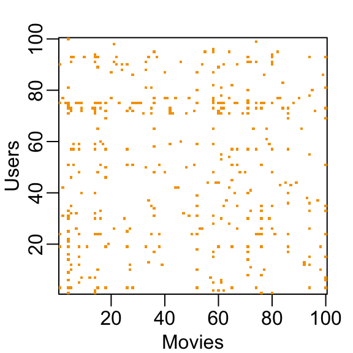

Capítulo 33 Grandes conjuntos de datos
Los problemas de aprendizaje automático a menudo implican conjuntos de datos que son tan grandes o más grandes que el conjunto de datos MNIST. Existe una variedad de técnicas computacionales y conceptos estadísticos que son útiles para el análisis de grandes conjuntos de datos. En este capítulo, rascamos la superficie de estas técnicas y conceptos describiendo álgebra matricial, reducción de dimensiones, regularización y factorización matricial. Utilizamos sistemas de recomendación relacionados con las clasificaciones de películas como un ejemplo motivador.
33.1 Álgebra matricial
En el aprendizaje automático, las situaciones en las que todos los predictores son numéricos, o pueden convertirse a numéricos de manera significativa, son comunes. El conjunto de datos de dígitos es un ejemplo: cada píxel registra un número entre 0 y 255. Carguemos los datos:
En estos casos, a menudo es conveniente guardar los predictores en una matriz y el resultado en un vector en lugar de utilizar un marco de datos. Puede ver que los predictores se guardan como una matriz:
Esta matriz representa 60,000 dígitos, por lo que para los ejemplos en este capítulo, tomaremos un subconjunto más manejable. Tomaremos los primeros 1,000 predictores x y etiquetas y:
La razón principal para usar matrices es que ciertas operaciones matemáticas necesarias para desarrollar código eficiente se pueden realizar usando técnicas de una rama de las matemáticas llamada álgebra lineal. De hecho, el álgebra lineal y la notación matricial son elementos clave del lenguaje utilizado en trabajos académicos que describen técnicas de aprendizaje automático. No cubriremos el álgebra lineal en detalle aquí, pero demostraremos cómo usar matrices en R para que pueda aplicar las técnicas de álgebra lineal ya implementadas en la base R u otros paquetes.
Para motivar el uso de matrices, plantearemos cinco preguntas/ desafíos:
1. ¿Algunos dígitos requieren más tinta que otros? Estudie la distribución de la oscuridad total de píxeles y cómo varía según los dígitos.
2. ¿Algunos píxeles no son informativos? Estudie la variación de cada píxel y elimine los predictores (columnas) asociados con los píxeles que no cambian mucho y, por lo tanto, no pueden proporcionar mucha información para la clasificación.
3. ¿Podemos eliminar las manchas? Primero, observe la distribución de todos los valores de píxeles. Use esto para elegir un límite para definir el espacio no escrito. Luego, establezca cualquier cosa por debajo de ese límite en 0.
4. Binarizar los datos. Primero, observe la distribución de todos los valores de píxeles. Use esto para elegir un límite para distinguir entre escribir y no escribir. Luego, convierta todas las entradas en 1 o 0, respectivamente.
5. Escale cada uno de los predictores en cada entrada para tener el mismo promedio y desviación estándar.
Para completar esto, tendremos que realizar operaciones matemáticas que involucren varias variables. El tidyverse no está desarrollado para realizar este tipo de operaciones matemáticas. Para esta tarea, es conveniente usar matrices.
Antes de hacer esto, introduciremos la notación matricial y el código R básico para definir y operar en matrices.
33.1.1 Notación
En álgebra matricial, tenemos tres tipos principales de objetos: escalares, vectores y matrices. Un escalar es solo un número, por ejemplo \(a = 1\). Para denotar escalares en notación matricial, generalmente usamos una letra minúscula y no en negrita.
Los vectores son como los vectores numéricos que definimos en R: incluyen varias entradas escalares. Por ejemplo, la columna que contiene el primer píxel:
tiene 1,000 entradas. En álgebra matricial, utilizamos la siguiente notación para un vector que representa una característica/ predictor:
\[ \begin{pmatrix} x_1\\\ x_2\\\ \vdots\\\ x_N \end{pmatrix} \]
Del mismo modo, podemos usar la notación matemática para representar diferentes características matemáticamente agregando un índice:
\[ \mathbf{X}_1 = \begin{pmatrix} x_{1,1}\\ \vdots\\ x_{N,1} \end{pmatrix} \mbox{ and } \mathbf{X}_2 = \begin{pmatrix} x_{1,2}\\ \vdots\\ x_{N,2} \end{pmatrix} \]
Si estamos escribiendo una columna, como \(\mathbf{X}_1\), en una oración a menudo usamos la notación: \(\mathbf{X}_1 = ( x_{1,1}, \dots x_{N,1})^\top\) con \(^\top\) la operación de transposición que convierte las columnas en filas y las filas en columnas.
Una matriz se puede definir como una serie de vectores del mismo tamaño unidos como columnas:
x_1 <- 1:5
x_2 <- 6:10
cbind(x_1, x_2)
#> x_1 x_2
#> [1,] 1 6
#> [2,] 2 7
#> [3,] 3 8
#> [4,] 4 9
#> [5,] 5 10Matemáticamente, los representamos con letras mayúsculas en negrita:
\[ \mathbf{X} = [ \mathbf{X}_1 \mathbf{X}_2 ] = \begin{pmatrix} x_{1,1}&x_{1,2}\\ \vdots\\ x_{N,1}&x_{N,2} \end{pmatrix} \]
La dimensión de una matriz a menudo es una característica importante necesaria para asegurar que se puedan realizar ciertas operaciones. La dimensión es un resumen de dos números definido como el número de filas. \(\times\) el número de columnas. En R, podemos extraer la dimensión de una matriz con la función dim:
Los vectores pueden considerarse \(N\times 1\) matrices Sin embargo, en R, un vector no tiene dimensiones:
Sin embargo, explícitamente convertimos un vector en una matriz usando la función as.matrix:
Podemos usar esta notación para denotar un número arbitrario de predictores con lo siguiente \(N\times p\) matriz, por ejemplo, con \(p=784\):
\[ \mathbf{X} = \begin{pmatrix} x_{1,1}&\dots & x_{1,p} \\ x_{2,1}&\dots & x_{2,p} \\ & \vdots & \\ x_{N,1}&\dots & x_{N,p} \end{pmatrix} \]
Almacenamos esta matriz en x:
Ahora aprenderemos varias operaciones útiles relacionadas con el álgebra matricial. Utilizamos tres de las preguntas motivadoras mencionadas anteriormente.
33.1.2 Convertir un vector en una matriz
A menudo es útil convertir un vector en una matriz. Por ejemplo, debido a que las variables son píxeles en una cuadrícula, podemos convertir las filas de intensidades de píxeles en una matriz que representa esta cuadrícula.
Podemos convertir un vector en una matriz con el matrix función y especificando el número de filas y columnas que debe tener la matriz resultante. La matriz se llena por columna: la primera columna se llena primero, luego la segunda y así sucesivamente. Este ejemplo ayuda a ilustrar:
my_vector <- 1:15
mat <- matrix(my_vector, 5, 3)
mat
#> [,1] [,2] [,3]
#> [1,] 1 6 11
#> [2,] 2 7 12
#> [3,] 3 8 13
#> [4,] 4 9 14
#> [5,] 5 10 15Podemos llenar por fila usando el byrow argumento. Entonces, por ejemplo, para transponer la matriz mat, nosotros podemos usar:
mat_t <- matrix(my_vector, 3, 5, byrow = TRUE)
mat_t
#> [,1] [,2] [,3] [,4] [,5]
#> [1,] 1 2 3 4 5
#> [2,] 6 7 8 9 10
#> [3,] 11 12 13 14 15Cuando convertimos las columnas en filas, nos referimos a las operaciones como transponer la matriz. La función t se puede usar para transponer directamente una matriz:
Advertencia: El matrix la función recicla valores en el vector sin advertencia si el producto de columnas y filas no coincide con la longitud del vector:
matrix(my_vector, 4, 5)
#> Warning in matrix(my_vector, 4, 5): la longitud de los datos [15] no es
#> un submúltiplo o múltiplo del número de filas [4] en la matriz
#> [,1] [,2] [,3] [,4] [,5]
#> [1,] 1 5 9 13 2
#> [2,] 2 6 10 14 3
#> [3,] 3 7 11 15 4
#> [4,] 4 8 12 1 5Para poner las intensidades de píxeles de nuestra, digamos, tercera entrada, que es un en la cuadrícula, podemos usar:
Para confirmar que, de hecho, lo hemos hecho correctamente, podemos usar la función image, que muestra una imagen de su tercer argumento. La parte superior de este gráfico es el píxel 1, que se muestra en la parte inferior para que la imagen se voltee. Para codificar a continuación se incluye un código que muestra cómo voltearlo:

33.1.3 Resúmenes de filas y columnas
Para la primera tarea, relacionada con la oscuridad total de píxeles, queremos sumar los valores de cada fila y luego visualizar cómo estos valores varían por dígito.
La función rowSums toma una matriz como entrada y calcula los valores deseados:
También podemos calcular los promedios con rowMeans si queremos que los valores permanezcan entre 0 y 255:
Una vez que tengamos esto, simplemente podemos generar un diagrama de caja:
tibble(labels = as.factor(y), row_averages = avg) %>%
qplot(labels, row_averages, data = ., geom = "boxplot")
De esta gráfica vemos que, como es lógico, 1s usan menos tinta que los otros dígitos.
Podemos calcular las sumas y promedios de la columna usando la función colSums y colMeans, respectivamente.
El paquete matrixStats agrega funciones que realizan operaciones en cada fila o columna de manera muy eficiente, incluidas las funciones rowSds y colSds.
33.1.4 apply
Las funciones que acabamos de describir están realizando una operación similar a la que sapply y la función purrr map hacer: aplica la misma función a una parte de tu objeto. En este caso, la función se aplica a cada fila o cada columna. los apply la función le permite aplicar cualquier función, no solo sum o mean, a una matriz. El primer argumento es la matriz, el segundo es la dimensión, 1 para las filas, 2 para las columnas y el tercero es la función. Así por ejemplo, rowMeans se puede escribir como:
Pero note que al igual que con sapply y map, podemos realizar cualquier función. Entonces, si quisiéramos la desviación estándar para cada columna, podríamos escribir:
La desventaja de esta flexibilidad es que estas operaciones no son tan rápidas como las funciones dedicadas como rowMeans.
33.1.5 Filtrar columnas basadas en resúmenes
Ahora pasamos a la tarea 2: estudiar la variación de cada píxel y eliminar las columnas asociadas con píxeles que no cambian mucho y, por lo tanto, no informan la clasificación. Aunque es un enfoque simplista, cuantificaremos la variación de cada píxel con su desviación estándar en todas las entradas. Como cada columna representa un píxel, utilizamos el colSds función del paquete matrixStats:
Un vistazo rápido a la distribución de estos valores muestra que algunos píxeles tienen una variabilidad muy baja de entrada a entrada:

Esto tiene sentido ya que no escribimos en algunas partes del cuadro. Aquí está la variación trazada por ubicación:

Vemos que hay poca variación en las esquinas.
Podríamos eliminar características que no tienen variación ya que estas no pueden ayudarnos a predecir. En la sección 2.4.7, describimos las operaciones utilizadas para extraer columnas:
y filas:
También podemos usar índices lógicos para determinar qué columnas o filas mantener. Entonces, si quisiéramos eliminar predictores no informativos de nuestra matriz, podríamos escribir esta línea de código:
Solo se mantienen las columnas para las que la desviación estándar es superior a 60, lo que elimina más de la mitad de los predictores.
Aquí agregamos una advertencia importante relacionada con el subconjunto de matrices: si selecciona una columna o una fila, el resultado ya no es una matriz sino un vector.
Sin embargo, podemos preservar la clase de matriz usando el argumento drop=FALSE:
33.1.6 Indexación con matrices
Podemos hacer rápidamente un histograma de todos los valores en nuestro conjunto de datos. Vimos cómo podemos convertir vectores en matrices. También podemos deshacer esto y convertir matrices en vectores. La operación se realizará por fila:
Para ver un histograma de todos nuestros datos predictores, podemos usar:

Notamos una clara dicotomía que se explica como partes de la imagen con tinta y partes sin ella. Si creemos que los valores a continuación, digamos, 50 son manchas, podemos hacerlos rápidamente cero usando:
Para ver qué hace esto, observamos una matriz más pequeña:
mat <- matrix(1:15, 5, 3)
mat[mat < 3] <- 0
mat
#> [,1] [,2] [,3]
#> [1,] 0 6 11
#> [2,] 0 7 12
#> [3,] 3 8 13
#> [4,] 4 9 14
#> [5,] 5 10 15También podemos usar operaciones lógicas con matriz lógica:
33.1.7 Binarizar los datos
El histograma anterior parece sugerir que estos datos son principalmente binarios. Un píxel tiene tinta o no. Usando lo que hemos aprendido, podemos binarizar los datos usando solo operaciones matriciales:
También podemos convertir a una matriz de lógicas y luego coaccionar a números como este:
33.1.8 Vectorización para matrices
En R, si restamos un vector de una matriz, el primer elemento del vector se resta de la primera fila, el segundo elemento de la segunda fila, y así sucesivamente. Usando la notación matemática, la escribiríamos de la siguiente manera:
\[ \begin{pmatrix} X_{1,1}&\dots & X_{1,p} \\ X_{2,1}&\dots & X_{2,p} \\ & \vdots & \\ X_{N,1}&\dots & X_{N,p} \end{pmatrix} - \begin{pmatrix} a_1\\\ a_2\\\ \vdots\\\ a_N \end{pmatrix} = \begin{pmatrix} X_{1,1}-a_1&\dots & X_{1,p} -a_1\\ X_{2,1}-a_2&\dots & X_{2,p} -a_2\\ & \vdots & \\ X_{N,1}-a_n&\dots & X_{N,p} -a_n \end{pmatrix} \]
Lo mismo es válido para otras operaciones aritméticas. Esto implica que podemos escalar cada fila de una matriz como esta:
Si desea escalar cada columna, tenga cuidado ya que este enfoque no funciona para las columnas. Para realizar una operación similar, convertimos las columnas en filas usando la transposición t, proceda como se indica arriba y luego transponga de regreso:
También podemos usar una función llamada sweep que funciona de manera similar a apply. Toma cada entrada de un vector y lo resta de la fila o columna correspondiente.
La función sweep en realidad tiene otro argumento que le permite definir la operación aritmética. Entonces, para dividir por la desviación estándar, hacemos lo siguiente:
33.1.9 Operaciones de álgebra matricial
Finalmente, aunque no cubrimos las operaciones de álgebra matricial, como la multiplicación matricial, compartimos aquí los comandos relevantes para aquellos que conocen las matemáticas y quieren aprender el código:
1. La multiplicación de matrices se realiza con %*%. Por ejemplo, el producto cruzado es:
2. Podemos calcular el producto cruzado directamente con la función:
3. Para calcular el inverso de una función, usamos solve. Aquí se aplica al producto cruzado:
4. La descomposición QR está fácilmente disponible mediante el uso de qr función:
33.2 Ejercicios
1. Cree una matriz de 100 por 10 de números normales generados aleatoriamente. Pon el resultado en x.
2. Aplica las tres funciones R que te dan la dimensión de x, el número de filas de x y el número de columnas de x, respectivamente.
3. Agregue el escalar 1 a la fila 1, el escalar 2 a la fila 2, y así sucesivamente, a la matriz x.
4. Agregue el escalar 1 a la columna 1, el escalar 2 a la columna 2, y así sucesivamente, a la matriz x. Sugerencia: uso sweep con FUN = "+".
5. Calcule el promedio de cada fila de x.
6. Calcule el promedio de cada columna de x.
7. Para cada dígito en los datos de entrenamiento MNIST, calcule la proporción de píxeles que se encuentran en un área gris, definida como valores entre 50 y 205.
Hacer diagrama de caja por clase de dígitos. Sugerencia: utilice operadores lógicos y rowMeans.
33.3 Distancia
Muchos de los análisis que realizamos con datos de alta dimensión se relacionan directa o indirectamente con la distancia. La mayoría de las técnicas de agrupamiento y aprendizaje automático se basan en la capacidad de definir la distancia entre observaciones, utilizando características o predictores.
33.3.1 Distancia euclidiana
Como revisión, definamos la distancia entre dos puntos, \(A\) y \(B\), en un plano cartesiano.

La distancia euclidiana entre \(A\) y \(B\) es simple:
\[ \mbox{dist}(A,B) = \sqrt{ (A_x-B_x)^2 + (A_y-B_y)^2} \]
Esta definición se aplica al caso de una dimensión, en la que la distancia entre dos números es simplemente el valor absoluto de su diferencia. Entonces, si nuestros dos números unidimensionales son \(A\) y \(B\), la distancia es:
\[ \mbox{dist}(A,B) = \sqrt{ (A - B)^2 } = | A - B | \]
33.3.2 Distancia en dimensiones superiores
Anteriormente presentamos un conjunto de datos de entrenamiento con mediciones de matriz de características para 784 características. Con fines ilustrativos, veremos una muestra aleatoria de 2s y 7s.
library(tidyverse)
library(dslabs)
if(!exists("mnist")) mnist <- read_mnist()
set.seed(1995)
ind <- which(mnist$train$labels %in% c(2,7)) %>% sample(500)
x <- mnist$train$images[ind,]
y <- mnist$train$labels[ind]Los predictores están en x y las etiquetas en y.
A los fines de, por ejemplo, suavizado, estamos interesados en describir la distancia entre observaciones; En este caso, dígitos. Más adelante, con el fin de seleccionar características, también podríamos estar interesados en encontrar píxeles que se comporten de manera similar en todas las muestras.
Para definir la distancia, necesitamos saber qué son los puntos, ya que la distancia matemática se calcula entre puntos. Con datos de alta dimensión, los puntos ya no están en el plano cartesiano. En cambio, los puntos están en dimensiones más altas. Ya no podemos visualizarlos y necesitamos pensar de manera abstracta. Por ejemplo, predictores \(\mathbf{X}_i\) se definen como un punto en el espacio dimensional 784: \(\mathbf{X}_i = (x_{i,1},\dots,x_{i,784})^\top\).
Una vez que definimos los puntos de esta manera, la distancia euclidiana se define de manera muy similar a la de dos dimensiones. Por ejemplo, la distancia entre los predictores para dos observaciones, digamos observaciones \(i=1\) y \(i=2\), es:
\[ \mbox{dist}(1,2) = \sqrt{ \sum_{j=1}^{784} (x_{1,j}-x_{2,j })^2 } \]
Este es solo un número no negativo, tal como lo es para dos dimensiones.
33.3.3 Ejemplo de distancia euclidiana
Las etiquetas para las tres primeras observaciones son:
Los vectores de predictores para cada una de estas observaciones son:
Los primeros dos números son siete y el tercero es un 2. Esperamos las distancias entre el mismo número:
ser más pequeño que entre diferentes números:
Como se esperaba, los 7 están más cerca uno del otro.
Una forma más rápida de calcular esto es usar álgebra matricial:
sqrt(crossprod(x_1 - x_2))
#> [,1]
#> [1,] 3273
sqrt(crossprod(x_1 - x_3))
#> [,1]
#> [1,] 2311
sqrt(crossprod(x_2 - x_3))
#> [,1]
#> [1,] 2636También podemos calcular todas las distancias a la vez de manera relativamente rápida utilizando la función dist, que calcula la distancia entre cada fila y produce un objeto de clase dist:
Hay varias funciones relacionadas con el aprendizaje automático en R que toman objetos de clase dist como entrada Para acceder a las entradas usando índices de fila y columna, necesitamos forzarlo en una matriz. Podemos ver la distancia que calculamos arriba de esta manera:
Podemos ver rápidamente una imagen de estas distancias usando este código:
Si ordenamos esta distancia por las etiquetas, podemos ver que, en general, los dos están más cerca uno del otro y los sietes están más cerca el uno del otro:

Una cosa que notamos aquí es que parece haber más uniformidad en la forma en que se dibujan los sietes, ya que parecen estar más cercanos (más rojos) a otros sietes que los dos a otros dos.
33.3.4 Espacio predictor
Predictor space es un concepto que a menudo se usa para describir algoritmos de aprendizaje automático. El término espacio se refiere a una definición matemática que no describimos en detalle aquí. En cambio, proporcionamos una explicación simplificada para ayudar a comprender el término espacio predictivo cuando se usa en el contexto de algoritmos de aprendizaje automático.
El espacio del predictor puede considerarse como la colección de todos los posibles vectores de predictores que deben considerarse para el desafío de aprendizaje automático en cuestión. Cada miembro del espacio se conoce como point. Por ejemplo, en el conjunto de datos 2 o 7, el espacio predictivo consta de todos los pares \((x_1, x_2)\) tal que ambos \(x_1\) y \(x_2\) están dentro de 0 y 1. Este espacio en particular puede representarse gráficamente como un cuadrado. En el conjunto de datos MNIST, el espacio predictivo consta de todos los vectores dimensionales 784 con cada elemento vectorial un número entero entre 0 y 256. Un elemento esencial de un espacio predictor es que necesitamos definir una función que proporcione la distancia entre dos puntos. En la mayoría de los casos usamos la distancia euclidiana, pero hay otras posibilidades. Un caso particular en el que no podemos simplemente usar la distancia euclidiana es cuando tenemos predictores categóricos.
Definir un espacio predictivo es útil en el aprendizaje automático porque hacemos cosas como definir vecindarios de puntos, como lo requieren muchas técnicas de suavizado. Por ejemplo, podemos definir un vecindario como todos los puntos que están dentro de 2 unidades de un centro predefinido. Si los puntos son bidimensionales y usamos la distancia euclidiana, esta vecindad se representa gráficamente como un círculo con radio 2. En tres dimensiones, la vecindad es una esfera. Pronto aprenderemos sobre algoritmos que dividen el espacio en regiones que no se superponen y luego hacen diferentes predicciones para cada región utilizando los datos de la región.
33.3.5 Distancia entre predictores
También podemos calcular distancias entre predictores. Si \(N\) es el número de observaciones, la distancia entre dos predictores, digamos 1 y 2, es:
\[ \mbox{dist}(1,2) = \sqrt{ \sum_{i=1}^{N} (x_{i,1}-x_{i,2})^2 } \]
Para calcular la distancia entre todos los pares de los predictores 784, primero podemos transponer la matriz y luego usar dist:
33.4 Ejercicios
1. Cargue el siguiente conjunto de datos:
Este conjunto de datos incluye una matriz x
con la expresión génica medida en 500 genes para 189 muestras biológicas que representan siete tejidos diferentes. El tipo de tejido se almacena en y
Calcule la distancia entre cada observación y almacénela en un objeto d.
2. Compare la distancia entre las dos primeras observaciones (ambos cerebelos), la 39 y la 40 (ambos colones) y la 73 y 74 (ambos endometrios). Vea si las observaciones del mismo tipo de tejido están más próximas entre sí.
3. Vemos que, de hecho, las observaciones del mismo tipo de tejido están más próximas entre sí en los seis ejemplos de tejido que acabamos de examinar. Haz un diagrama de todas las distancias usando el image función para ver si este patrón es general. Sugerencia: convertir d a una matriz primero.
33.5 Reducción de dimensiones
Un reto típico de machinte learning incluirá una gran cantidad de predictores, lo que hace que la visualización sea algo desafiante. Hemos mostrado métodos para visualizar datos univariados y emparejados, pero los gráficos que revelan relaciones entre muchas variables son más complicados en dimensiones más altas. Por ejemplo, para comparar cada una de las 784 características en nuestro ejemplo de predicción de dígitos, tendríamos que crear, por ejemplo, 306,936 diagramas de dispersión. La creación de un único diagrama de dispersión de los datos es imposible debido a la alta dimensionalidad.
Aquí describimos técnicas poderosas útiles para el análisis exploratorio de datos, entre otras cosas, generalmente conocidas como reducción de dimensiones. La idea general es reducir la dimensión del set de datos mientras se conservan características importantes, como la distancia entre características u observaciones. Con menos dimensiones, la visualización se vuelve más factible. La técnica detrás de todo, la descomposición de valores singulares, también es útil en otros contextos. El análisis de componentes principales (PCA) es el enfoque que mostraremos. Antes de aplicar PCA a conjuntos de datos de alta dimensión, motivaremos las ideas detrás con un ejemplo simple.
33.5.1 Preservando la distancia
Consideramos un ejemplo con alturas gemelas. Algunas parejas son adultas, otras son niños. Aquí simulamos 100 puntos bidimensionales que representan el número de desviaciones estándar que cada individuo tiene respecto a la altura media. Cada punto es un par de gemelos. Utilizamos el mvrnorm función del paquete MASS para simular datos normales bivariados.
set.seed(1988)
library(MASS)
n <- 100
Sigma <- matrix(c(9, 9 * 0.9, 9 * 0.92, 9 * 1), 2, 2)
x <- rbind(mvrnorm(n/ 2, c(69, 69), Sigma),
mvrnorm(n/ 2, c(55, 55), Sigma))Un diagrama de dispersión revela rápidamente que la correlación es alta y que hay dos grupos de gemelos, los adultos (puntos superiores derechos) y los niños (puntos inferiores izquierdos):

Nuestras características son \(N\) puntos bidimensionales, las dos alturas y, con fines ilustrativos, actuaremos como si visualizar dos dimensiones fuera demasiado difícil. Por lo tanto, queremos reducir las dimensiones de dos a uno, pero aún así poder comprender características importantes de los datos, por ejemplo, que las observaciones se agrupan en dos grupos: adultos y niños.
Consideremos un desafío específico: queremos un resumen unidimensional de nuestros predictores a partir del cual podamos aproximar la distancia entre dos observaciones. En la figura anterior, mostramos la distancia entre la observación 1 y 2 (azul) y la observación 1 y 51 (rojo). Tenga en cuenta que la línea azul es más corta, lo que implica que 1 y 2 están más cerca.
Podemos calcular estas distancias usando dist:
Esta distancia se basa en dos dimensiones y necesitamos una aproximación de distancia basada en una sola.
Comencemos con el enfoque ingenuo de simplemente eliminar una de las dos dimensiones. Comparemos las distancias reales con la distancia calculada solo con la primera dimensión:
Aquí están las distancias aproximadas versus las distancias originales:

La trama se ve casi igual si usamos la segunda dimensión. Obtenemos una subestimación general. Esto es de esperarse porque estamos agregando más cantidades positivas en el cálculo de la distancia a medida que aumentamos el número de dimensiones. Si en cambio usamos un promedio, como este
\[\sqrt{ \frac{1}{2} \sum_{j=1}^2 (X_{i,j}-X_{i,j})^2 },\]
entonces la subestimación desaparece. Dividimos la distancia por \(\sqrt{2}\) para lograr la corrección.

En realidad, esto funciona bastante bien y obtenemos una diferencia típica de:
Ahora, ¿podemos elegir un resumen unidimensional que haga que esta aproximación sea aún mejor?
Si miramos hacia atrás al diagrama de dispersión anterior y visualizamos una línea entre cualquier par de puntos, la longitud de esta línea es la distancia entre los dos puntos. Estas líneas tienden a ir a lo largo de la dirección de la diagonal. Tenga en cuenta que si en su lugar trazamos la diferencia frente al promedio:
podemos ver cómo la distancia entre puntos se explica principalmente por la primera dimensión: el promedio.

Esto significa que podemos ignorar la segunda dimensión y no perder demasiada información. Si la línea es completamente plana, no perdemos ninguna información. Usando la primera dimensión de esta matriz transformada obtenemos una aproximación aún mejor:

con la diferencia típica mejorada en aproximadamente un 35%:
Más tarde aprendemos que z[,1] es el primer componente principal de la matriz x.
33.5.2 Transformaciones lineales (avanzado)
Tenga en cuenta que cada fila de \(X\) fue transformado usando una transformación lineal. Para cualquier fila \(i\), la primera entrada fue:
\[Z_{i,1} = a_{1,1} X_{i,1} + a_{2,1} X_{i,2}\]
con \(a_{1,1} = 0.5\) y \(a_{2,1} = 0.5\).
La segunda entrada también fue una transformación lineal:
\[Z_{i,2} = a_{1,2} X_{i,1} + a_{2,2} X_{i,2}\]
con \(a_{1,2} = 1\) y \(a_{2,2} = -1\).
También podemos usar la transformación lineal para obtener \(X\) de regreso de \(Z\):
\[X_{i,1} = b_{1,1} Z_{i,1} + b_{2,1} Z_{i,2}\]
con \(b_{1,2} = 1\) y \(b_{2,1} = 0.5\) y
\[X_{i,2} = b_{2,1} Z_{i,1} + b_{2,2} Z_{i,2}\]
con \(b_{2,1} = 1\) y \(a_{1,2} = -0.5\).
Si está familiarizado con el álgebra lineal, podemos escribir la operación que acabamos de realizar de esta manera:
\[ Z = X A \mbox{ with } A = \, \begin{pmatrix} 1/2&1\\ 1/2&-1\\ \end{pmatrix}. \]
Y que podemos transformar de nuevo simplemente multiplicando por \(A^{-1}\) como sigue:
\[ X = Z A^{-1} \mbox{ with } A^{-1} = \, \begin{pmatrix} 1&1\\ 1/2&-1/2\\ \end{pmatrix}. \]
La reducción de dimensiones a menudo se puede describir como la aplicación de una transformación \(A\) a una matriz \(X\) con muchas columnas que mueven la información contenida en \(X\) a las primeras columnas de \(Z=AX\), manteniendo solo estas pocas columnas informativas, reduciendo así la dimensión de los vectores contenidos en las filas.
33.5.3 Transformaciones ortogonales (avanzado)
Tenga en cuenta que dividimos lo anterior por \(\sqrt{2}\) para tener en cuenta las diferencias en las dimensiones al comparar una distancia de 2 dimensiones con una distancia de 1 dimensión. De hecho, podemos garantizar que las escalas de distancia sigan siendo las mismas si volvemos a escalar las columnas de \(A\) para asegurar que la suma de cuadrados es 1
\[a_{1,1}^2 + a_{2,1}^2 = 1\mbox{ and } a_{1,2}^2 + a_{2,2}^2=1,\]
y que la correlación de las columnas es 0:
\[ a_{1,1} a_{1,2} + a_{2,1} a_{2,2} = 0. \]
Recuerde que si las columnas están centradas para tener un promedio de 0, entonces la suma de los cuadrados es equivalente a la varianza o desviación estándar al cuadrado.
En nuestro ejemplo, para lograr la ortogonalidad, multiplicamos el primer set de coeficientes (primera columna de \(A\)) por \(\sqrt{2}\) y el segundo por \(1/\sqrt{2}\), entonces obtenemos la misma distancia exacta si usamos ambas dimensiones:
Esto nos da una transformación que preserva la distancia entre dos puntos:
y una aproximación mejorada si usamos solo la primera dimensión:
En este caso \(Z\) se llama rotación ortogonal de \(X\): conserva las distancias entre filas.
Tenga en cuenta que al usar la transformación anterior podemos resumir la distancia entre dos pares de gemelos con una sola dimensión. Por ejemplo, exploración de datos unidimensionales de la primera dimensión de \(Z\) muestra claramente que hay dos grupos, adultos y niños:

Redujimos con éxito el número de dimensiones de dos a uno con muy poca pérdida de información.
La razón por la que pudimos hacer esto es porque las columnas de \(X\) estaban muy correlacionados:
y la transformación produjo columnas no correlacionadas con información “independiente” en cada columna:
Una forma en que esta información puede ser útil en una aplicación de machinte learning es que podemos reducir la complejidad de un modelo utilizando solo \(Z_1\) en lugar de ambos \(X_1\) y \(X_2\).
En realidad, es común obtener datos con varios predictores altamente correlacionados. En estos casos, PCA, que describimos a continuación, puede ser bastante útil para reducir la complejidad del modelo que se está ajustando.
33.5.4 Análisis de componentes principales
En el cálculo anterior, la variabilidad total en nuestros datos puede definirse como la suma de la suma de los cuadrados de las columnas. Suponemos que las columnas están centradas, por lo que esta suma es equivalente a la suma de las varianzas de cada columna:
\[ v_1 + v_2, \mbox{ with } v_1 = \frac{1}{N}\sum_{i=1}^N X_{i,1}^2 \mbox{ and } v_2 = \frac{1}{N}\sum_{i=1}^N X_{i,2}^2 \]
Podemos calcular \(v_1\) y \(v_2\) utilizando:
y podemos mostrar matemáticamente que si aplicamos una transformación ortogonal como la anterior, la variación total sigue siendo la misma:
Sin embargo, mientras que la variabilidad en las dos columnas de X es casi lo mismo, en la versión transformada \(Z\) el 99% de la variabilidad se incluye solo en la primera dimensión:
El primer componente principal (PC) de una matriz \(X\) es la transformación ortogonal lineal de \(X\) eso maximiza esta variabilidad. La función prcomp proporciona esta información:
Tenga en cuenta que la primera PC es casi la misma que la proporcionada por el \((X_1 + X_2)/ \sqrt{2}\) utilizamos anteriormente (excepto quizás por un cambio de signo que es arbitrario).
La función PCA devuelve la rotación necesaria para transformar \(X\) para que la variabilidad de las columnas disminuya de más variable a menos (se accede con $rotation) as well as the resulting new matrix (accessed with $ x). Por defecto las columnas de \(X\) están primero centrados.
Entonces, usando la multiplicación matricial que se muestra arriba, tenemos que lo siguiente es lo mismo (demostrado por una diferencia entre elementos esencialmente cero):
La rotación es ortogonal, lo que significa que lo inverso es su transposición. Entonces también tenemos que estos dos son idénticos:
Podemos visualizarlos para ver cómo el primer componente resume los datos. En el gráfico a continuación, el rojo representa valores altos y valores negativos azules (más adelante aprendemos por qué llamamos a estos pesos y patrones):

Resulta que podemos encontrar esta transformación lineal no solo para dos dimensiones sino también para matrices de cualquier dimensión \(p\).
Para una matriz multidimensional con \(X\) con \(p\) columnas, podemos encontrar una transformación que crea \(Z\) que conserva la distancia entre filas, pero con la varianza de las columnas en orden decreciente. La segunda columna es el segundo componente principal, la tercera columna es el tercer componente principal, y así sucesivamente. Como en nuestro ejemplo, si después de un cierto número de columnas, digamos \(k\), las variaciones de las columnas de \(Z_j\), \(j>k\) son muy pequeños, significa que estas dimensiones tienen poco que contribuir a la distancia y podemos aproximar la distancia entre dos puntos con solo \(k\) dimensiones. Si \(k\) es mucho más pequeño que \(p\), entonces podemos lograr un resumen muy eficiente de nuestros datos.
33.5.5 Ejemplo de Iris
Los datos del iris son un ejemplo ampliamente utilizado en los cursos de análisis de datos. Incluye cuatro medidas botánicas relacionadas con tres especies de flores:
Si imprime iris$Species verá que los datos están ordenados por especie.
Calculemos la distancia entre cada observación. Puede ver claramente las tres especies con una especie muy diferente de las otras dos:
x <- iris[,1:4] %>% as.matrix()
d <- dist(x)
image(as.matrix(d), col = rev(RColorBrewer::brewer.pal(9, "RdBu")))
Nuestros predictores aquí tienen cuatro dimensiones, pero tres están muy correlacionadas:
cor(x)
#> Sepal.Length Sepal.Width Petal.Length Petal.Width
#> Sepal.Length 1.000 -0.118 0.872 0.818
#> Sepal.Width -0.118 1.000 -0.428 -0.366
#> Petal.Length 0.872 -0.428 1.000 0.963
#> Petal.Width 0.818 -0.366 0.963 1.000Si aplicamos PCA, deberíamos poder aproximar esta distancia con solo dos dimensiones, comprimiendo las dimensiones altamente correlacionadas. Utilizando la summary función podemos ver la variabilidad explicada por cada PC:
pca <- prcomp(x)
summary(pca)
#> Importance of components:
#> PC1 PC2 PC3 PC4
#> Standard deviation 2.056 0.4926 0.2797 0.15439
#> Proportion of Variance 0.925 0.0531 0.0171 0.00521
#> Cumulative Proportion 0.925 0.9777 0.9948 1.00000Las dos primeras dimensiones representan el 97% de la variabilidad. Por lo tanto, deberíamos poder aproximar muy bien la distancia con dos dimensiones. Podemos visualizar los resultados de PCA:

Y vea que el primer patrón es la longitud del sépalo, la longitud del pétalo y el ancho del pétalo (rojo) en una dirección y el ancho del sépalo (azul) en la otra. El segundo patrón es la longitud del sépalo y el ancho del pétalo en una dirección (azul) y la longitud y el ancho del pétalo en la otra (rojo). Puede ver en los pesos que la primera PC1 controla la mayor parte de la variabilidad y separa claramente el primer tercio de las muestras (setosa) de los dos tercios (versicolor y virginica). Si observa la segunda columna de las pesas, observa que separa algo versicolor (rojo) de virginica (azul).
Podemos ver esto mejor al trazar las dos primeras PC con el color que representa la especie:
data.frame(pca$x[,1:2], Species=iris$Species) %>%
ggplot(aes(PC1,PC2, fill = Species))+
geom_point(cex=3, pch=21) +
coord_fixed(ratio = 1)
Vemos que las dos primeras dimensiones preservan la distancia:

Este ejemplo es más realista que el primer ejemplo artificial que utilizamos, ya que mostramos cómo podemos visualizar los datos usando dos dimensiones cuando los datos eran de cuatro dimensiones.
33.5.6 Ejemplo de MNIST
El ejemplo de dígitos escritos tiene 784 características. ¿Hay espacio para la reducción de datos? ¿Podemos crear algoritmos sencillos de machinte learning con menos funciones?
Carguemos los datos:
Debido a que los píxeles son tan pequeños, esperamos que los píxeles cercanos entre sí en la cuadrícula estén correlacionados, lo que significa que la reducción de dimensión debería ser posible.
Probemos PCA y exploremos la variación de las PC. Esto tomará unos segundos ya que es una matriz bastante grande.

Podemos ver que las primeras PC ya explican un gran porcentaje de la variabilidad:
summary(pca)$importance[,1:5]
#> PC1 PC2 PC3 PC4 PC5
#> Standard deviation 576.823 493.238 459.8993 429.8562 408.5668
#> Proportion of Variance 0.097 0.071 0.0617 0.0539 0.0487
#> Cumulative Proportion 0.097 0.168 0.2297 0.2836 0.3323Y con solo mirar las dos primeras PC vemos información sobre la clase. Aquí hay una muestra aleatoria de 2,000 dígitos:
data.frame(PC1 = pca$x[,1], PC2 = pca$x[,2],
label=factor(mnist$train$label)) %>%
sample_n(2000) %>%
ggplot(aes(PC1, PC2, fill=label))+
geom_point(cex=3, pch=21)
También podemos ver las combinaciones lineales en la cuadrícula para tener una idea de lo que se está ponderando:

Las PC de menor varianza aparecen relacionadas con la variabilidad sin importancia en las esquinas:

Ahora apliquemos la transformación que aprendimos con los datos de entrenamiento a los datos de prueba, reduzca la dimensión y ejecute knn en solo un pequeño número de dimensiones.
Intentamos 36 dimensiones ya que esto explica aproximadamente el 80% de los datos. Primero ajuste el modelo:
library(caret)
k <- 36
x_train <- pca$x[,1:k]
y <- factor(mnist$train$labels)
fit <- knn3(x_train, y)Ahora transforma el set de evaluación:
Y estamos listos para predecir y ver cómo lo hacemos:
y_hat <- predict(fit, x_test, type = "class")
confusionMatrix(y_hat, factor(mnist$test$labels))$overall["Accuracy"]
#> Accuracy
#> 0.975Con solo 36 dimensiones, obtenemos una precisión muy superior a 0,95.
33.6 Ejercicios
1. Queremos explorar el tissue_gene_expression predictores al trazarlos.
Queremos tener una idea de qué observaciones son cercanas entre sí, pero los predictores son de 500 dimensiones, por lo que es difícil trazar. Trace los dos primeros componentes principales con un color que represente el tipo de tejido.
2. Los predictores para cada observación se miden en el mismo dispositivo y procedimiento experimental. Esto introduce sesgos que pueden afectar a todos los predictores de una observación. Para cada observación, calcule el promedio en todos los predictores y luego grafique esto contra la primera PC con el color que representa el tejido. Informe la correlación.
3. Vemos una asociación con la primera PC y los promedios de observación. Vuelva a hacer la PCA pero solo después de quitar el centro.
4. Para las primeras 10 PC, haga un diagrama de caja que muestre los valores para cada tejido.
5. Trace el porcentaje de varianza explicado por el número de PC. Sugerencia: use el summary función.
33.7 Sistemas de recomendación
Los sistemas de recomendación utilizan clasificaciones que users_han dado_items para hacer recomendaciones específicas. Las compañías que venden muchos productos a muchos clientes y permiten que estos clientes califiquen sus productos, como Amazon, pueden recopilar conjuntos de datos masivos que pueden usarse para predecir qué calificación otorgará un usuario en particular a un artículo específico. Los elementos para los que se predice una calificación alta para un usuario determinado se recomiendan a ese usuario.
Netflix utiliza un sistema de recomendación para predecir cuántas estrellas dará un usuario a una película específica. Una estrella sugiere que no es una buena película, mientras que cinco estrellas sugiere que es una película excelente. Aquí, proporcionamos los conceptos básicos de cómo se hacen estas recomendaciones, motivados por algunos de los enfoques adoptados por los ganadores de los Netflix challenge.
En octubre de 2006, Netflix ofreció un desafío a la comunidad de ciencia de datos: mejorar nuestro algoritmo de recomendación en un 10% y ganar un millón de dólares. En septiembre de 2009 los ganadores fueron anunciados115. Puede leer un buen resumen de cómo se creó el algoritmo ganador aquí: [http://blog.echen.me/2011/10/24/winning-the-netflix-prize-a-summary/font>(http://blog.echen.me/2011/10/24/winning-the-netflix-prize-a-summary/) y una explicación más detallada aquí: [http://www.netflixprize.com/assets/GrandPrize2009_BPC_BellKor.pdffont>(http://www.netflixprize.com/assets/GrandPrize2009_BPC_BellKor.pdf). Ahora le mostraremos algunas de las estrategias de análisis de datos utilizadas por el equipo ganador.
33.7.1 Datos de lente de película
Los datos de Netflix no están disponibles públicamente, pero el laboratorio de investigación de GroupLens116 generó su propia base de datos con más de 20 millones de calificaciones para más de 27,000 películas de más de 138,000 usuarios. Ponemos a disposición un pequeño subconjunto de estos datos a través del paquete dslabs:
Podemos ver que esta tabla está en formato ordenado con miles de filas:
movielens %>% as_tibble()
#> # A tibble: 100,004 x 7
#> movieId title year genres userId rating timestamp
#> <int> <chr> <int> <fct> <int> <dbl> <int>
#> 1 31 Dangerous Minds 1995 Drama 1 2.5 1.26e9
#> 2 1029 Dumbo 1941 Animation|Chi… 1 3 1.26e9
#> 3 1061 Sleepers 1996 Thriller 1 3 1.26e9
#> 4 1129 Escape from New … 1981 Action|Advent… 1 2 1.26e9
#> 5 1172 Cinema Paradiso … 1989 Drama 1 4 1.26e9
#> # … with 99,999 more rowsCada fila representa una calificación dada por un usuario a una película.
Podemos ver la cantidad de usuarios únicos que proporcionaron calificaciones y cuántas películas únicas fueron calificadas:
movielens %>%
summarize(n_users = n_distinct(userId),
n_movies = n_distinct(movieId))
#> n_users n_movies
#> 1 671 9066Si multiplicamos esos dos números, obtenemos un número mayor de 5 millones, sin embargo, nuestra tabla de datos tiene aproximadamente 100,000 filas. Esto implica que no todos los usuarios calificaron todas las películas. Por lo tanto, podemos pensar en estos datos como una matriz muy grande, con usuarios en las filas y películas en las columnas, con muchas celdas vacías. los gather la función nos permite convertirlo a este formato, pero si lo probamos para toda la matriz, se bloqueará R. Vamos a mostrar la matriz para siete usuarios y cuatro películas.
| userId | Forrest Gump | Pulp Fiction | Shawshank Redemption | Silence of the Lambs |
|---|---|---|---|---|
| 13 | 5.0 | 3.5 | 4.5 | NA |
| 15 | 1.0 | 5.0 | 2.0 | 5.0 |
| 16 | NA | NA | 4.0 | NA |
| 17 | 2.5 | 5.0 | 5.0 | 4.5 |
| 19 | 5.0 | 5.0 | 4.0 | 3.0 |
| 20 | 2.0 | 0.5 | 4.5 | 0.5 |
Puede pensar en la tarea de un sistema de recomendación como completar el NA s en la tabla de arriba. Para ver qué tan dispersa es la matriz, aquí está la matriz para una muestra aleatoria de 100 películas y 100 usuarios con amarillo que indica una combinación de usuario/ película para la que tenemos una calificación.

Este desafío de aprendizaje automático es más complicado que lo que hemos estudiado hasta ahora porque cada resultado \(Y\) tiene un conjunto diferente de predictores. Para ver esto, tenga en cuenta que si estamos prediciendo la calificación de la película \(i\) por usuario \(u\), en principio, todas las otras clasificaciones relacionadas con la película \(i\) y por usuario \(u\) pueden usarse como predictores, pero diferentes usuarios califican diferentes películas y un número diferente de películas. Además, podemos usar información de otras películas que hemos determinado que son similares a las películas. \(i\) o de usuarios que se consideran similares al usuario \(u\). En esencia, toda la matriz se puede utilizar como predictores para cada celda.
Veamos algunas de las propiedades generales de los datos para comprender mejor los desafíos.
Lo primero que notamos es que algunas películas se califican más que otras. A continuación se muestra la distribución. Esto no debería sorprendernos dado que hay películas de gran éxito vistas por millones y películas artísticas e independientes vistas por unos pocos. Nuestra segunda observación es que algunos usuarios son más activos que otros en la calificación de películas:

33.7.2 Sistemas de recomendación como un desafío de aprendizaje automático
Para ver cómo se trata de un tipo de aprendizaje automático, tenga en cuenta que necesitamos construir un algoritmo con los datos que hemos recopilado que luego se aplicarán fuera de nuestro control, a medida que los usuarios busquen recomendaciones de películas. Así que creemos un conjunto de pruebas para evaluar la precisión de los modelos que implementamos.
library(caret)
set.seed(755)
test_index <- createDataPartition(y = movielens$rating, times = 1, p = 0.2,
list = FALSE)
train_set <- movielens[-test_index,]
test_set <- movielens[test_index,]Para asegurarnos de que no incluimos usuarios y películas en el conjunto de prueba que no aparecen en el conjunto de entrenamiento, eliminamos estas entradas usando el semi_join función:
33.7.3 Función de pérdida
El desafío de Netflix usó la pérdida de error típica: decidieron un ganador basado en el error cuadrático medio residual (RMSE) en un conjunto de prueba. Definimos \(y_{u,i}\) como la calificación de la película \(i\) por usuario \(u\) y denotar nuestra predicción con \(\hat{y}_{u,i}\). El RMSE se define entonces como:
\[ \mbox{RMSE} = \sqrt{\frac{1}{N} \sum_{u,i}^{} \left( \hat{y}_{u,i} - y_{u,i} \right)^2 } \] con \(N\) es el número de combinaciones de usuario/ película y la suma que ocurre en todas estas combinaciones.
Recuerde que podemos interpretar el RMSE de manera similar a una desviación estándar: es el error típico que cometemos al predecir una calificación de película. Si este número es mayor que 1, significa que nuestro error típico es mayor que una estrella, lo cual no es bueno.
Escribamos una función que calcule el RMSE para vectores de clasificaciones y sus predictores correspondientes:
33.7.4 Un primer modelo
Comencemos construyendo el sistema de recomendación más simple posible: predecimos la misma calificación para todas las películas, independientemente del usuario. ¿Qué número debería ser esta predicción? Podemos usar un enfoque basado en modelos para responder a esto. Un modelo que asume la misma calificación para todas las películas y usuarios con todas las diferencias explicadas por la variación aleatoria se vería así:
\[ Y_{u,i} = \mu + \varepsilon_{u,i} \]
con \(\varepsilon_{i,u}\) errores independientes muestreados de la misma distribución centrada en 0 y \(\mu\) la calificación “verdadera” para todas las películas. Sabemos que la estimación que minimiza el RMSE es la estimación de mínimos cuadrados de \(\mu\) y, en este caso, es el promedio de todas las calificaciones:
Si predecimos todas las calificaciones desconocidas con \(\hat{\mu}\) obtenemos el siguiente RMSE:
Tenga en cuenta que si conecta cualquier otro número, obtendrá un RMSE más alto. Por ejemplo:
Al observar la distribución de calificaciones, podemos visualizar que esta es la desviación estándar de esa distribución. Obtenemos un RMSE de aproximadamente 1. Para ganar el gran premio de $ 1,000,000, un equipo participante tuvo que obtener un RMSE de aproximadamente 0.857. ¡Así que definitivamente podemos hacerlo mejor!
A medida que avanzamos, compararemos diferentes enfoques. Comencemos creando una tabla de resultados con este enfoque ingenuo:
33.7.5 Modelado de efectos de películas
Sabemos por experiencia que algunas películas generalmente tienen una calificación más alta que otras. Esta la intuición, que las diferentes películas se clasifican de manera diferente, se confirma por los datos. Podemos aumentar nuestro modelo anterior agregando el término \(b_i\) para representar la clasificación promedio de la película \(i\):
\[ Y_{u,i} = \mu + b_i + \varepsilon_{u,i} \]
Los libros de texto de estadísticas se refieren a \(b\) s como efectos. Sin embargo, en los documentos de desafío de Netflix, se refieren a ellos como “sesgo”, por lo tanto, el \(b\) notación.
De nuevo podemos usar mínimos cuadrados para estimar el \(b_i\) de la siguiente manera:
Porque hay miles de \(b_i\) a medida que cada película obtiene una, la lm() la función será muy lenta aquí. Por lo tanto, no recomendamos ejecutar el código anterior. Pero en esta situación particular, sabemos que los mínimos cuadrados estiman \(\hat{b}_i\) es solo el promedio de \(Y_{u,i} - \hat{\mu}\) para cada película \(i\). Entonces podemos calcularlos de esta manera (dejaremos caer el NA notación en el código para representar estimaciones en el futuro):
mu <- mean(train_set$rating)
movie_avgs <- train_set %>%
group_by(movieId) %>%
summarize(b_i = mean(rating - mu))
#> `summarise()` ungrouping output (override with `.groups` argument)Podemos ver que estas estimaciones varían sustancialmente:

Recuerda \(\hat{\mu}=3.5\) entonces un \(b_i = 1.5\) implica una calificación perfecta de cinco estrellas.
Veamos cuánto mejora nuestra predicción una vez que usamos \(\hat{y}_{u,i} = \hat{\mu} + \hat{b}_i\):
predicted_ratings <- mu + test_set %>%
left_join(movie_avgs, by='movieId') %>%
pull(b_i)
RMSE(predicted_ratings, test_set$rating)
#> [1] 0.989Ya vemos una mejora. ¿Pero podemos hacerlo mejor?
33.7.6 Efectos de usuario
Calculemos la calificación promedio para el usuario \(u\) para aquellos que han calificado más de 100 películas:
train_set %>%
group_by(userId) %>%
summarize(b_u = mean(rating)) %>%
filter(n()>=100) %>%
ggplot(aes(b_u)) +
geom_histogram(bins = 30, color = "black")
#> `summarise()` ungrouping output (override with `.groups` argument)
Tenga en cuenta que existe una variabilidad sustancial entre los usuarios también: algunos usuarios son muy irritables y otros adoran cada película. Esto implica que una mejora adicional de nuestro modelo puede ser:
\[ Y_{u,i} = \mu + b_i + b_u + \varepsilon_{u,i} \]
dónde \(b_u\) es un efecto específico del usuario. Ahora si un usuario malhumorado (negativo \(b_u\)) califica una gran película (positiva \(b_i\)), los efectos se contrarrestan y podemos predecir correctamente que este usuario le dio a esta gran película un 3 en lugar de un 5.
Para ajustar este modelo, podríamos usar nuevamente lm me gusta esto:
pero, por las razones descritas anteriormente, no lo haremos. En cambio, calcularemos una aproximación calculando \(\hat{\mu}\) y \(\hat{b}_i\) y estimar \(\hat{b}_u\) como el promedio de \(y_{u,i} - \hat{\mu} - \hat{b}_i\):
user_avgs <- train_set %>%
left_join(movie_avgs, by='movieId') %>%
group_by(userId) %>%
summarize(b_u = mean(rating - mu - b_i))
#> `summarise()` ungrouping output (override with `.groups` argument)Ahora podemos construir predictores y ver cuánto mejora el RMSE:
33.8 Ejercicios
1. Carga el movielens datos.
Calcule el número de calificaciones para cada película y luego compárelo con el año en que salió la película. Use la transformación de raíz cuadrada en los recuentos.
2. Vemos que, en promedio, las películas que salieron después de 1993 obtienen más calificaciones. También vemos que con las películas más nuevas, a partir de 1993, el número de calificaciones disminuye con el año: cuanto más reciente es una película, menos tiempo han tenido los usuarios para calificarla.
Entre las películas que salieron en 1993 o más tarde, ¿cuáles son las 25 películas con más calificaciones por año? También informe su calificación promedio.
3. De la tabla construida en el ejemplo anterior, vemos que las películas mejor calificadas tienden a tener calificaciones superiores al promedio. Esto no es sorprendente: más personas miran películas populares. Para confirmar esto, estratifique las películas posteriores a 1993 por calificaciones por año y calcule sus calificaciones promedio. Haga un gráfico de calificación promedio versus calificaciones por año y muestre una estimación de la tendencia.
4. En el ejercicio anterior, vemos que cuanto más se califica una película, mayor es la calificación. Suponga que está haciendo un análisis predictivo en el que necesita completar las calificaciones faltantes con algún valor. ¿Cuál de las siguientes estrategias usarías?
- Complete los valores faltantes con la calificación promedio de todas las películas. si. Complete los valores faltantes con 0.
- Complete el valor con un valor más bajo que el promedio ya que la falta de calificación está asociada con calificaciones más bajas. Pruebe diferentes valores y evalúe la predicción en un conjunto de prueba. re. Ninguna de las anteriores.
5. Los movielens el conjunto de datos también incluye una marca de tiempo. Esta variable representa el tiempo y los datos en los que se proporcionó la calificación. Las unidades son segundos desde el 1 de enero de 1970. Cree una nueva columna date con la fecha Sugerencia: use el as_datetime funcionen en el paquete lubridate.
6. Calcule la calificación promedio de cada semana y calcule este promedio contra el día. Sugerencia: use el round_date funcionar ante ti group_by.
7. La trama muestra alguna evidencia de un efecto temporal. Si definimos \(d_{u,i}\) como el día para el usuario \(u\) calificación de la película \(i\), cuál de los siguientes modelos es el más apropiado:
- \(Y_{u,i} = \mu + b_i + b_u + d_{u,i} + \varepsilon_{u,i}\). si. \(Y_{u,i} = \mu + b_i + b_u + d_{u,i}\beta + \varepsilon_{u,i}\).
- \(Y_{u,i} = \mu + b_i + b_u + d_{u,i}\beta_i + \varepsilon_{u,i}\). re. \(Y_{u,i} = \mu + b_i + b_u + f(d_{u,i}) + \varepsilon_{u,i}\), con \(f\) una función suave de \(d_{u,i}\).
8. Los movielens los datos también tienen un genres columna. Esta columna incluye todos los géneros que se aplican a la película. Algunas películas pertenecen a varios géneros. Defina una categoría como cualquier combinación que aparezca en esta columna. Mantenga solo categorías con más de 1,000 calificaciones. Luego calcule el error promedio y estándar para cada categoría. Trace estos como diagramas de barras de error.
9. La trama muestra una fuerte evidencia de un efecto de género. Si definimos \(g_{u,i}\) como el género para el usuario \(u\) calificación de la película \(i\), cuál de los siguientes modelos es el más apropiado:
- \(Y_{u,i} = \mu + b_i + b_u + d_{u,i} + \varepsilon_{u,i}\). si. \(Y_{u,i} = \mu + b_i + b_u + d_{u,i}\beta + \varepsilon_{u,i}\).
- \(Y_{u,i} = \mu + b_i + b_u + \sum_{k=1}^K x_{u,i} \beta_k + \varepsilon_{u,i}\), con \(x^k_{u,i} = 1\) si \(g_{u,i}\) es genero \(k\). re. \(Y_{u,i} = \mu + b_i + b_u + f(d_{u,i}) + \varepsilon_{u,i}\), con \(f\) una función suave de \(d_{u,i}\).
33.9 Regularización
33.9.1 Motivación
A pesar de la gran variación de película a película, nuestra mejora en RMSE fue solo del 5%. Exploremos dónde cometimos errores en nuestro primer modelo, usando solo efectos de película \(b_i\). Aquí están los 10 errores más grandes:
test_set %>%
left_join(movie_avgs, by='movieId') %>%
mutate(residual = rating - (mu + b_i)) %>%
arrange(desc(abs(residual))) %>%
slice(1:10) %>%
pull(title)
#> [1] "Kingdom, The (Riget)" "Heaven Knows, Mr. Allison"
#> [3] "American Pimp" "Chinatown"
#> [5] "American Beauty" "Apocalypse Now"
#> [7] "Taxi Driver" "Wallace & Gromit: A Close Shave"
#> [9] "Down in the Delta" "Stalag 17"Todo esto parece películas oscuras. Muchos de ellos tienen grandes predicciones. Echemos un vistazo a las 10 peores y mejores películas basadas en \(\hat{b}_i\). Primero, creemos una base de datos que se conecte movieId al título de la película:
Aquí están las 10 mejores películas según nuestra estimación:
movie_avgs %>% left_join(movie_titles, by="movieId") %>%
arrange(desc(b_i)) %>%
slice(1:10) %>%
pull(title)
#> [1] "When Night Is Falling"
#> [2] "Lamerica"
#> [3] "Mute Witness"
#> [4] "Picture Bride (Bijo photo)"
#> [5] "Red Firecracker, Green Firecracker (Pao Da Shuang Deng)"
#> [6] "Paris, France"
#> [7] "Faces"
#> [8] "Maya Lin: A Strong Clear Vision"
#> [9] "Heavy"
#> [10] "Gate of Heavenly Peace, The"Y aquí están los 10 peores:
movie_avgs %>% left_join(movie_titles, by="movieId") %>%
arrange(b_i) %>%
slice(1:10) %>%
pull(title)
#> [1] "Children of the Corn IV: The Gathering"
#> [2] "Barney's Great Adventure"
#> [3] "Merry War, A"
#> [4] "Whiteboyz"
#> [5] "Catfish in Black Bean Sauce"
#> [6] "Killer Shrews, The"
#> [7] "Horrors of Spider Island (Ein Toter Hing im Netz)"
#> [8] "Monkeybone"
#> [9] "Arthur 2: On the Rocks"
#> [10] "Red Heat"Todos parecen ser bastante oscuros. Veamos con qué frecuencia son calificados.
train_set %>% count(movieId) %>%
left_join(movie_avgs, by="movieId") %>%
left_join(movie_titles, by="movieId") %>%
arrange(desc(b_i)) %>%
slice(1:10) %>%
pull(n)
#> [1] 1 1 1 1 3 1 1 2 1 1
train_set %>% count(movieId) %>%
left_join(movie_avgs) %>%
left_join(movie_titles, by="movieId") %>%
arrange(b_i) %>%
slice(1:10) %>%
pull(n)
#> Joining, by = "movieId"
#> [1] 1 1 1 1 1 1 1 1 1 1Las supuestas películas “mejores” y “peores” fueron calificadas por muy pocos usuarios, en la mayoría de los casos solo 1. Estas películas eran en su mayoría oscuras. Esto se debe a que con solo unos pocos usuarios, tenemos más incertidumbre. Por lo tanto, mayores estimaciones de \(b_i\), negativo o positivo, son más probables.
Estas son estimaciones ruidosas en las que no debemos confiar, especialmente cuando se trata de predicciones. Grandes errores pueden aumentar nuestro RMSE, por lo que preferimos ser conservadores cuando no estoy seguro
En secciones anteriores, calculamos el error estándar y construimos intervalos de confianza para tener en cuenta los diferentes niveles de incertidumbre. Sin embargo, al hacer predicciones, necesitamos un número, una predicción, no un intervalo. Para esto, presentamos el concepto de regularización.
La regularización nos permite penalizar grandes estimaciones que se forman utilizando pequeños tamaños de muestra. Tiene puntos en común con el Enfoque bayesiano que redujo las predicciones descritas en la Sección 16.4.
33.9.2 Mínimos cuadrados penalizados
La idea general detrás de la regularización es restringir la variabilidad total de los tamaños del efecto. ¿Por qué esto ayuda? Considere un caso en el que tenemos película \(i=1\) con 100 valoraciones de usuarios y 4 películas \(i=2,3,4,5\) con solo una calificación de usuario. Tenemos la intención de ajustar el modelo
\[ Y_{u,i} = \mu + b_i + \varepsilon_{u,i} \]
Supongamos que sabemos que la calificación promedio es, digamos, \(\mu = 3\). Si usamos mínimos cuadrados, la estimación para el primer efecto de película \(b_1\) es el promedio de las 100 calificaciones de los usuarios, \(1/100 \sum_{i=1}^{100} (Y_{i,1} - \mu)\), que esperamos sea bastante preciso. Sin embargo, la estimación para las películas 2, 3, 4 y 5 será simplemente la desviación observada de la calificación promedio \(\hat{b}_i = Y_{u,i} - \hat{\mu}\) que es una estimación basada en un solo número, por lo que no será precisa en absoluto. Tenga en cuenta que estas estimaciones hacen el error \(Y_{u,i} - \mu + \hat{b}_i\) igual a 0 para \(i=2,3,4,5\), pero este es un caso de sobreentrenamiento. De hecho, ignorando al único usuario y adivinando que las películas 2,3,4 y 5 son solo películas promedio ( \(b_i = 0\)) podría proporcionar una mejor predicción. La idea general de la regresión penalizada es controlar la variabilidad total de los efectos de la película: \(\sum_{i=1}^5 b_i^2\). Específicamente, en lugar de minimizar la ecuación de mínimos cuadrados, minimizamos una ecuación que agrega una penalización:
\[\frac{1}{N} \sum_{u,i} \left(y_{u,i} - \mu - b_i\right)^2 + \lambda \sum_{i} b_i^2\] El primer término es solo mínimos cuadrados y el segundo es una penalización que aumenta cuando muchos \(b_i\) son grandes. Usando el cálculo podemos mostrar que los valores de \(b_i\) que minimizan esta ecuación son:
\[ \hat{b}_i(\lambda) = \frac{1}{\lambda + n_i} \sum_{u=1}^{n_i} \left(Y_{u,i} - \hat{\mu}\right) \]
dónde \(n_i\) es la cantidad de clasificaciones hechas para la película \(i\). Este enfoque tendrá el efecto deseado: cuando nuestro tamaño de muestra \(n_i\) es muy grande, un caso que nos dará una estimación estable, luego la penalización \(\lambda\) es efectivamente ignorado desde \(n_i+\lambda \approx n_i\). Sin embargo, cuando el \(n_i\) es pequeño, entonces la estimación \(\hat{b}_i(\lambda)\) se encoge hacia 0. El más grande \(\lambda\), cuanto más nos encogemos.
Calculemos estas estimaciones regularizadas de \(b_i\) utilizando \(\lambda=3\). Más adelante, veremos por qué elegimos 3.
lambda <- 3
mu <- mean(train_set$rating)
movie_reg_avgs <- train_set %>%
group_by(movieId) %>%
summarize(b_i = sum(rating - mu)/(n()+lambda), n_i = n())
#> `summarise()` ungrouping output (override with `.groups` argument)Para ver cómo se reducen las estimaciones, hagamos un gráfico de las estimaciones regularizadas versus las estimaciones de mínimos cuadrados.
tibble(original = movie_avgs$b_i,
regularlized = movie_reg_avgs$b_i,
n = movie_reg_avgs$n_i) %>%
ggplot(aes(original, regularlized, size=sqrt(n))) +
geom_point(shape=1, alpha=0.5)
Ahora, echemos un vistazo a las 10 mejores películas basadas en las estimaciones penalizadas \(\hat{b}_i(\lambda)\):
train_set %>%
count(movieId) %>%
left_join(movie_reg_avgs, by = "movieId") %>%
left_join(movie_titles, by = "movieId") %>%
arrange(desc(b_i)) %>%
slice(1:10) %>%
pull(title)
#> [1] "Paris Is Burning" "Shawshank Redemption, The"
#> [3] "Godfather, The" "African Queen, The"
#> [5] "Band of Brothers" "Paperman"
#> [7] "On the Waterfront" "All About Eve"
#> [9] "Usual Suspects, The" "Ikiru"¡Esto tiene mucho más sentido! Estas películas se ven más y tienen más calificaciones. Aquí están las 10 peores películas principales:
train_set %>%
count(movieId) %>%
left_join(movie_reg_avgs, by = "movieId") %>%
left_join(movie_titles, by="movieId") %>%
arrange(b_i) %>%
select(title, b_i, n) %>%
slice(1:10) %>%
pull(title)
#> [1] "Battlefield Earth"
#> [2] "Joe's Apartment"
#> [3] "Super Mario Bros."
#> [4] "Speed 2: Cruise Control"
#> [5] "Dungeons & Dragons"
#> [6] "Batman & Robin"
#> [7] "Police Academy 6: City Under Siege"
#> [8] "Cats & Dogs"
#> [9] "Disaster Movie"
#> [10] "Mighty Morphin Power Rangers: The Movie"¿Mejoramos nuestros resultados?
predicted_ratings <- test_set %>%
left_join(movie_reg_avgs, by = "movieId") %>%
mutate(pred = mu + b_i) %>%
pull(pred)
RMSE(predicted_ratings, test_set$rating)
#> [1] 0.97#> # A tibble: 4 x 2
#> method RMSE
#> <chr> <dbl>
#> 1 Just the average 1.05
#> 2 Movie Effect Model 0.989
#> 3 Movie + User Effects Model 0.905
#> 4 Regularized Movie Effect Model 0.970Las estimaciones penalizadas proporcionan una gran mejora sobre las estimaciones de mínimos cuadrados.
33.9.3 Elegir los términos de penalización
Tenga en cuenta que \(\lambda\) es un parámetro de ajuste. Podemos usar validación cruzada para elegirlo.
lambdas <- seq(0, 10, 0.25)
mu <- mean(train_set$rating)
just_the_sum <- train_set %>%
group_by(movieId) %>%
summarize(s = sum(rating - mu), n_i = n())
#> `summarise()` ungrouping output (override with `.groups` argument)
rmses <- sapply(lambdas, function(l){
predicted_ratings <- test_set %>%
left_join(just_the_sum, by='movieId') %>%
mutate(b_i = s/(n_i+l)) %>%
mutate(pred = mu + b_i) %>%
pull(pred)
return(RMSE(predicted_ratings, test_set$rating))
})
qplot(lambdas, rmses)
lambdas[which.min(rmses)]
#> [1] 3
Sin embargo, si bien mostramos esto como una ilustración, en la práctica deberíamos usar validación cruzada completa solo en el conjunto del tren, sin usar el conjunto de prueba hasta la evaluación final. El conjunto de prueba nunca debe utilizarse para la sintonización
También podemos utilizar la regularización para estimar los efectos del usuario. Estamos minimizando:
\[ \frac{1}{N} \sum_{u,i} \left(y_{u,i} - \mu - b_i - b_u \right)^2 + \lambda \left(\sum_{i} b_i^2 + \sum_{u} b_u^2\right) \]
Las estimaciones que minimizan esto se pueden encontrar de manera similar a lo que hicimos anteriormente. Aquí usamos validación cruzada para elegir un \(\lambda\):
lambdas <- seq(0, 10, 0.25)
rmses <- sapply(lambdas, function(l){
mu <- mean(train_set$rating)
b_i <- train_set %>%
group_by(movieId) %>%
summarize(b_i = sum(rating - mu)/(n()+l))
b_u <- train_set %>%
left_join(b_i, by="movieId") %>%
group_by(userId) %>%
summarize(b_u = sum(rating - b_i - mu)/(n()+l))
predicted_ratings <-
test_set %>%
left_join(b_i, by = "movieId") %>%
left_join(b_u, by = "userId") %>%
mutate(pred = mu + b_i + b_u) %>%
pull(pred)
return(RMSE(predicted_ratings, test_set$rating))
})
#> `summarise()` ungrouping output (override with `.groups` argument)
#> `summarise()` ungrouping output (override with `.groups` argument)
#> `summarise()` ungrouping output (override with `.groups` argument)
#> `summarise()` ungrouping output (override with `.groups` argument)
#> `summarise()` ungrouping output (override with `.groups` argument)
#> `summarise()` ungrouping output (override with `.groups` argument)
#> `summarise()` ungrouping output (override with `.groups` argument)
#> `summarise()` ungrouping output (override with `.groups` argument)
#> `summarise()` ungrouping output (override with `.groups` argument)
#> `summarise()` ungrouping output (override with `.groups` argument)
#> `summarise()` ungrouping output (override with `.groups` argument)
#> `summarise()` ungrouping output (override with `.groups` argument)
#> `summarise()` ungrouping output (override with `.groups` argument)
#> `summarise()` ungrouping output (override with `.groups` argument)
#> `summarise()` ungrouping output (override with `.groups` argument)
#> `summarise()` ungrouping output (override with `.groups` argument)
#> `summarise()` ungrouping output (override with `.groups` argument)
#> `summarise()` ungrouping output (override with `.groups` argument)
#> `summarise()` ungrouping output (override with `.groups` argument)
#> `summarise()` ungrouping output (override with `.groups` argument)
#> `summarise()` ungrouping output (override with `.groups` argument)
#> `summarise()` ungrouping output (override with `.groups` argument)
#> `summarise()` ungrouping output (override with `.groups` argument)
#> `summarise()` ungrouping output (override with `.groups` argument)
#> `summarise()` ungrouping output (override with `.groups` argument)
#> `summarise()` ungrouping output (override with `.groups` argument)
#> `summarise()` ungrouping output (override with `.groups` argument)
#> `summarise()` ungrouping output (override with `.groups` argument)
#> `summarise()` ungrouping output (override with `.groups` argument)
#> `summarise()` ungrouping output (override with `.groups` argument)
#> `summarise()` ungrouping output (override with `.groups` argument)
#> `summarise()` ungrouping output (override with `.groups` argument)
#> `summarise()` ungrouping output (override with `.groups` argument)
#> `summarise()` ungrouping output (override with `.groups` argument)
#> `summarise()` ungrouping output (override with `.groups` argument)
#> `summarise()` ungrouping output (override with `.groups` argument)
#> `summarise()` ungrouping output (override with `.groups` argument)
#> `summarise()` ungrouping output (override with `.groups` argument)
#> `summarise()` ungrouping output (override with `.groups` argument)
#> `summarise()` ungrouping output (override with `.groups` argument)
#> `summarise()` ungrouping output (override with `.groups` argument)
#> `summarise()` ungrouping output (override with `.groups` argument)
#> `summarise()` ungrouping output (override with `.groups` argument)
#> `summarise()` ungrouping output (override with `.groups` argument)
#> `summarise()` ungrouping output (override with `.groups` argument)
#> `summarise()` ungrouping output (override with `.groups` argument)
#> `summarise()` ungrouping output (override with `.groups` argument)
#> `summarise()` ungrouping output (override with `.groups` argument)
#> `summarise()` ungrouping output (override with `.groups` argument)
#> `summarise()` ungrouping output (override with `.groups` argument)
#> `summarise()` ungrouping output (override with `.groups` argument)
#> `summarise()` ungrouping output (override with `.groups` argument)
#> `summarise()` ungrouping output (override with `.groups` argument)
#> `summarise()` ungrouping output (override with `.groups` argument)
#> `summarise()` ungrouping output (override with `.groups` argument)
#> `summarise()` ungrouping output (override with `.groups` argument)
#> `summarise()` ungrouping output (override with `.groups` argument)
#> `summarise()` ungrouping output (override with `.groups` argument)
#> `summarise()` ungrouping output (override with `.groups` argument)
#> `summarise()` ungrouping output (override with `.groups` argument)
#> `summarise()` ungrouping output (override with `.groups` argument)
#> `summarise()` ungrouping output (override with `.groups` argument)
#> `summarise()` ungrouping output (override with `.groups` argument)
#> `summarise()` ungrouping output (override with `.groups` argument)
#> `summarise()` ungrouping output (override with `.groups` argument)
#> `summarise()` ungrouping output (override with `.groups` argument)
#> `summarise()` ungrouping output (override with `.groups` argument)
#> `summarise()` ungrouping output (override with `.groups` argument)
#> `summarise()` ungrouping output (override with `.groups` argument)
#> `summarise()` ungrouping output (override with `.groups` argument)
#> `summarise()` ungrouping output (override with `.groups` argument)
#> `summarise()` ungrouping output (override with `.groups` argument)
#> `summarise()` ungrouping output (override with `.groups` argument)
#> `summarise()` ungrouping output (override with `.groups` argument)
#> `summarise()` ungrouping output (override with `.groups` argument)
#> `summarise()` ungrouping output (override with `.groups` argument)
#> `summarise()` ungrouping output (override with `.groups` argument)
#> `summarise()` ungrouping output (override with `.groups` argument)
#> `summarise()` ungrouping output (override with `.groups` argument)
#> `summarise()` ungrouping output (override with `.groups` argument)
#> `summarise()` ungrouping output (override with `.groups` argument)
#> `summarise()` ungrouping output (override with `.groups` argument)
qplot(lambdas, rmses)
Para el modelo completo, el óptimo \(\lambda\) es:
| method | RMSE |
|---|---|
| Just the average | 1.053 |
| Movie Effect Model | 0.989 |
| Movie + User Effects Model | 0.905 |
| Regularized Movie Effect Model | 0.970 |
| Regularized Movie + User Effect Model | 0.881 |
33.10 Ejercicios
Un experto en educación aboga por escuelas más pequeñas. El experto basa esta recomendación en el hecho de que entre las mejores escuelas, muchas son escuelas pequeñas. Simulemos un conjunto de datos para 100 escuelas. Primero, simulemos el número de estudiantes en cada escuela.
Ahora asignemos una calidad verdadera para cada escuela completamente independiente del tamaño. Este es el parámetro que queremos estimar.
mu <- round(80 + 2 * rt(1000, 5))
range(mu)
schools <- data.frame(id = paste("PS",1:100),
size = n,
quality = mu,
rank = rank(-mu))Podemos ver que las 10 mejores escuelas son:
Ahora hagamos que los estudiantes en la escuela tomen un examen. Existe una variabilidad aleatoria en la toma de exámenes, por lo que simularemos los puntajes de los exámenes distribuidos normalmente con el promedio determinado por la calidad de la escuela y las desviaciones estándar de 30 puntos porcentuales:
scores <- sapply(1:nrow(schools), function(i){
scores <- rnorm(schools$size[i], schools$quality[i], 30)
scores
})
schools <- schools %>% mutate(score = sapply(scores, mean))1. ¿Cuáles son las mejores escuelas según el puntaje promedio? Muestra solo la identificación, el tamaño y el puntaje promedio.
2. Compare el tamaño medio de la escuela con el tamaño medio de las 10 mejores escuelas según el puntaje.
3. Según esta prueba, parece que las escuelas pequeñas son mejores que las grandes. Cinco de las 10 mejores escuelas tienen 100 estudiantes o menos. ¿Pero como puede ser ésto? Construimos la simulación para que la calidad y el tamaño sean independientes. Repita el ejercicio para las peores 10 escuelas.
4. ¡Lo mismo es cierto para las peores escuelas! También son pequeños. Trace el puntaje promedio versus el tamaño de la escuela para ver qué está pasando. Destaque las 10 mejores escuelas según la calidad verdadera. Use la transformación de escala logarítmica para el tamaño.
5. Podemos ver que el error estándar de la puntuación tiene una mayor variabilidad cuando la escuela es más pequeña. Esta es una realidad estadística básica que aprendimos en las secciones de probabilidad e inferencia. De hecho, tenga en cuenta que 4 de las 10 mejores escuelas se encuentran en las 10 mejores escuelas según el puntaje del examen.
Usemos la regularización para elegir las mejores escuelas. Recuerde las desviaciones de la regularización desviaciones del promedio hacia 0. Entonces, para aplicar la regularización aquí, primero debemos definir el promedio general para todas las escuelas:
y luego defina, para cada escuela, cómo se desvía de ese promedio. Escriba un código que calcule el puntaje por encima del promedio de cada escuela pero dividiéndolo por \(n + \lambda\) en lugar de \(n\), con \(n\) el tamaño de la escuela y \(\lambda\) un parámetro de regularización. Tratar \(\lambda = 3\).
6. Tenga en cuenta que esto mejora un poco las cosas. El número de escuelas pequeñas que no están altamente clasificadas es ahora 4. ¿Existe una mejor \(\lambda\)? Encuentra el \(\lambda\) que minimiza el RMSE = \(1/100 \sum_{i=1}^{100} (\mbox{quality} - \mbox{estimate})^2\).
7. Clasifique las escuelas según el promedio obtenido con los mejores \(\alpha\). Tenga en cuenta que ninguna escuela pequeña se incluye incorrectamente.
8. Un error común al usar la regularización es reducir los valores hacia 0 que no están centrados alrededor de 0. Por ejemplo, si no restamos el promedio general antes de reducir, en realidad obtenemos un resultado muy similar. Confirme esto volviendo a ejecutar el código del ejercicio 6 pero sin eliminar la media general.
33.11 Factorización matricial
La factorización matricial es un concepto ampliamente utilizado en el aprendizaje automático. Está muy relacionado con el análisis factorial, la descomposición de valores singulares (SVD) y el análisis de componentes principales (PCA). Aquí describimos el concepto en el contexto de los sistemas de recomendación de películas.
Hemos descrito cómo el modelo:
\[ Y_{u,i} = \mu + b_i + b_u + \varepsilon_{u,i} \]
explica las diferencias de película a película a través del \(b_i\) y las diferencias de usuario a usuario a través de la \(b_u\). Pero este modelo omite una fuente importante de variación relacionada con el hecho de que los grupos de películas tienen patrones de calificación similares y los grupos de usuarios también tienen patrones de calificación similares. Descubriremos estos patrones estudiando los residuos:
\[ r_{u,i} = y_{u,i} - \hat{b}_i - \hat{b}_u \]
Para ver esto, convertiremos los datos en una matriz para que cada usuario obtenga una fila, cada película obtenga una columna y \(y_{u,i}\) es la entrada en fila \(u\) y columna \(i\). Con fines ilustrativos, solo consideraremos un pequeño subconjunto de películas con muchas calificaciones y usuarios que han calificado muchas películas. También conservamos el aroma de una mujer ( movieId == 3252) porque lo usamos para un ejemplo específico:
train_small <- movielens %>%
group_by(movieId) %>%
filter(n() >= 50 | movieId == 3252) %>% ungroup() %>%
group_by(userId) %>%
filter(n() >= 50) %>% ungroup()
y <- train_small %>%
select(userId, movieId, rating) %>%
spread(movieId, rating) %>%
as.matrix()Agregamos nombres de fila y columna:
rownames(y)<- y[,1]
y <- y[,-1]
movie_titles <- movielens %>%
select(movieId, title) %>%
distinct()
colnames(y) <- with(movie_titles, title[match(colnames(y), movieId)])y convertirlos en residuos eliminando los efectos de columna y fila:
Si el modelo anterior explica todas las señales, y el \(\varepsilon\) son solo ruido, entonces los residuos para diferentes películas deben ser independientes entre sí. Pero no lo son. Aquí hay unos ejemplos:
m_1 <- "Godfather, The"
m_2 <- "Godfather: Part II, The"
p1 <- qplot(y[ ,m_1], y[,m_2], xlab = m_1, ylab = m_2)
m_1 <- "Godfather, The"
m_3 <- "Goodfellas"
p2 <- qplot(y[ ,m_1], y[,m_3], xlab = m_1, ylab = m_3)
m_4 <- "You've Got Mail"
m_5 <- "Sleepless in Seattle"
p3 <- qplot(y[ ,m_4], y[,m_5], xlab = m_4, ylab = m_5)
gridExtra::grid.arrange(p1, p2 ,p3, ncol = 3)
Esta trama dice que a los usuarios que les gustó The Godfather más de lo que el modelo espera de ellos, según la película y los efectos del usuario, también les gustó The Godfather II más de lo esperado. Se observa una relación similar al comparar El Padrino y Goodfellas. Aunque no es tan fuerte, todavía hay correlación. También vemos correlaciones entre You Have Got Mail y Sleepless en Seattle
Al observar la correlación entre películas, podemos ver un patrón (cambiamos el nombre de las columnas para ahorrar espacio de impresión):
x <- y[, c(m_1, m_2, m_3, m_4, m_5)]
short_names <- c("Godfather", "Godfather2", "Goodfellas",
"You've Got", "Sleepless")
colnames(x) <- short_names
cor(x, use="pairwise.complete")
#> Godfather Godfather2 Goodfellas You've Got Sleepless
#> Godfather 1.000 0.829 0.444 -0.440 -0.378
#> Godfather2 0.829 1.000 0.521 -0.331 -0.358
#> Goodfellas 0.444 0.521 1.000 -0.481 -0.402
#> You've Got -0.440 -0.331 -0.481 1.000 0.533
#> Sleepless -0.378 -0.358 -0.402 0.533 1.000Parece que hay personas a las que les gustan las comedias románticas más de lo esperado, mientras que otras a las que les gustan las películas de gángsters más de lo esperado.
Estos resultados nos dicen que hay estructura en los datos. Pero, ¿cómo podemos modelar esto?
33.11.1 Análisis de factores
Aquí hay una ilustración, usando una simulación, de cómo podemos usar alguna estructura para predecir el \(r_{u,i}\). Supongamos nuestros residuos r se parece a esto:
round(r, 1)
#> Godfather Godfather2 Goodfellas You've Got Sleepless
#> 1 2.0 2.3 2.2 -1.8 -1.9
#> 2 2.0 1.7 2.0 -1.9 -1.7
#> 3 1.9 2.4 2.1 -2.3 -2.0
#> 4 -0.3 0.3 0.3 -0.4 -0.3
#> 5 -0.3 -0.4 0.3 0.2 0.3
#> 6 -0.1 0.1 0.2 -0.3 0.2
#> 7 -0.1 0.0 -0.2 -0.2 0.3
#> 8 0.2 0.2 0.1 0.0 0.4
#> 9 -1.7 -2.1 -1.8 2.0 2.4
#> 10 -2.3 -1.8 -1.7 1.8 1.7
#> 11 -1.7 -2.0 -2.1 1.9 2.3
#> 12 -1.8 -1.7 -2.1 2.3 2.0Parece que hay un patrón aquí. De hecho, podemos ver patrones de correlación muy fuertes:
cor(r)
#> Godfather Godfather2 Goodfellas You've Got Sleepless
#> Godfather 1.000 0.980 0.978 -0.974 -0.966
#> Godfather2 0.980 1.000 0.983 -0.987 -0.992
#> Goodfellas 0.978 0.983 1.000 -0.986 -0.989
#> You've Got -0.974 -0.987 -0.986 1.000 0.986
#> Sleepless -0.966 -0.992 -0.989 0.986 1.000Podemos crear vectores q y p, eso puede explicar gran parte de la estructura que vemos. los q se vería así:
y reduce las películas a dos grupos: gángster (codificado con 1) y romance (codificado con -1). También podemos reducir los usuarios a tres grupos:
los que les gustan las películas de gángsters y no les gustan las películas románticas (codificadas como 2), las que les gustan las películas románticas y no les gustan las películas de gángsters (codificadas como -2), y las que no les importa (codificadas como 0). El punto principal aquí es que casi podemos reconstruir \(r\), que tiene 60 valores, con un par de vectores que totalizan 17 valores. Si \(r\) contiene los residuos para usuarios \(u=1,\dots,12\) para peliculas \(i=1,\dots,5\) podemos escribir la siguiente fórmula matemática para nuestros residuos \(r_{u,i}\).
\[ r_{u,i} \approx p_u q_i \]
Esto implica que podemos explicar más variabilidad modificando nuestro modelo anterior para recomendaciones de películas para:
\[ Y_{u,i} = \mu + b_i + b_u + p_u q_i + \varepsilon_{u,i} \]
Sin embargo, motivamos la necesidad de \(p_u q_i\) término con una simulación simple. La estructura que se encuentra en los datos suele ser más compleja. Por ejemplo, en esta primera simulación supusimos que solo había un factor \(p_u\) eso determinó cuál de las dos películas de géneros \(u\) pertenece a. Pero la estructura en nuestros datos de películas parece ser mucho más complicada que la película de gángsters versus el romance. Podemos tener muchos otros factores. Aquí presentamos una simulación un poco más compleja. Ahora agregamos una sexta película.
round(r, 1)
#> Godfather Godfather2 Goodfellas You've Got Sleepless Scent
#> 1 0.5 0.6 1.6 -0.5 -0.5 -1.6
#> 2 1.5 1.4 0.5 -1.5 -1.4 -0.4
#> 3 1.5 1.6 0.5 -1.6 -1.5 -0.5
#> 4 -0.1 0.1 0.1 -0.1 -0.1 0.1
#> 5 -0.1 -0.1 0.1 0.0 0.1 -0.1
#> 6 0.5 0.5 -0.4 -0.6 -0.5 0.5
#> 7 0.5 0.5 -0.5 -0.6 -0.4 0.4
#> 8 0.5 0.6 -0.5 -0.5 -0.4 0.4
#> 9 -0.9 -1.0 -0.9 1.0 1.1 0.9
#> 10 -1.6 -1.4 -0.4 1.5 1.4 0.5
#> 11 -1.4 -1.5 -0.5 1.5 1.6 0.6
#> 12 -1.4 -1.4 -0.5 1.6 1.5 0.6Al explorar la estructura de correlación de este nuevo conjunto de datos
colnames(r)[4:6] <- c("YGM", "SS", "SW")
cor(r)
#> Godfather Godfather2 Goodfellas YGM SS SW
#> Godfather 1.000 0.997 0.562 -0.997 -0.996 -0.571
#> Godfather2 0.997 1.000 0.577 -0.998 -0.999 -0.583
#> Goodfellas 0.562 0.577 1.000 -0.552 -0.583 -0.994
#> YGM -0.997 -0.998 -0.552 1.000 0.998 0.558
#> SS -0.996 -0.999 -0.583 0.998 1.000 0.588
#> SW -0.571 -0.583 -0.994 0.558 0.588 1.000Observamos que quizás necesitemos un segundo factor para tener en cuenta el hecho de que a algunos usuarios les gusta Al Pacino, mientras que a otros no les gusta o no les importa. Observe que la estructura general de la correlación obtenida de los datos simulados no está tan lejos de la correlación real:
six_movies <- c(m_1, m_2, m_3, m_4, m_5, m_6)
x <- y[, six_movies]
colnames(x) <- colnames(r)
cor(x, use="pairwise.complete")
#> Godfather Godfather2 Goodfellas YGM SS SW
#> Godfather 1.0000 0.829 0.444 -0.440 -0.378 0.0589
#> Godfather2 0.8285 1.000 0.521 -0.331 -0.358 0.1186
#> Goodfellas 0.4441 0.521 1.000 -0.481 -0.402 -0.1230
#> YGM -0.4397 -0.331 -0.481 1.000 0.533 -0.1699
#> SS -0.3781 -0.358 -0.402 0.533 1.000 -0.1822
#> SW 0.0589 0.119 -0.123 -0.170 -0.182 1.0000Para explicar esta estructura más complicada, necesitamos dos factores. Por ejemplo algo como esto:
t(q)
#> Godfather Godfather2 Goodfellas You've Got Sleepless Scent
#> [1,] 1 1 1 -1 -1 -1
#> [2,] 1 1 -1 -1 -1 1Con el primer factor (la primera fila) utilizado para codificar los grupos de gángster versus romance y un segundo factor (la segunda fila) para explicar los grupos Al Pacino versus ningún grupo Al Pacino. También necesitaremos dos conjuntos de coeficientes para explicar la variabilidad introducida por el \(3\times 3\) tipos de grupos:
t(p)
#> 1 2 3 4 5 6 7 8 9 10 11 12
#> [1,] 1.0 1.0 1.0 0 0 0.0 0.0 0.0 -1 -1.0 -1.0 -1.0
#> [2,] -0.5 0.5 0.5 0 0 0.5 0.5 0.5 0 -0.5 -0.5 -0.5El modelo con dos factores tiene 36 parámetros que pueden usarse para explicar gran parte de la variabilidad en las 72 clasificaciones:
\[ Y_{u,i} = \mu + b_i + b_u + p_{u,1} q_{1,i} + p_{u,2} q_{2,i} + \varepsilon_{u,i} \]
Tenga en cuenta que en una aplicación de datos real, necesitamos ajustar este modelo a los datos. Para explicar la compleja correlación que observamos en datos reales, generalmente permitimos las entradas de \(p\) y \(q\) ser valores continuos, en lugar de discretos, como los que usamos en la simulación. Por ejemplo, en lugar de dividir las películas en gángster o romance, definimos un continuo. También tenga en cuenta que este no es un modelo lineal y para ajustarlo necesitamos usar un algoritmo diferente al usado por lm para encontrar los parámetros que minimizan los mínimos cuadrados. Los algoritmos ganadores para el desafío de Netflix se ajustan a un modelo similar al anterior y utilizan la regularización para penalizar por grandes valores de \(p\) y \(q\), en lugar de usar mínimos cuadrados. Implementando esto
enfoque está más allá del alcance de este libro.
33.11.2 Conexión a SVD y PCA
La descomposición:
\[ r_{u,i} \approx p_{u,1} q_{1,i} + p_{u,2} q_{2,i} \]
está muy relacionado con SVD y PCA. SVD y PCA son conceptos complicados, pero una forma de entenderlos es que SVD es un algoritmo que encuentra los vectores \(p\) y \(q\) que nos permiten reescribir la matriz \(\mbox{r}\) con \(m\) filas y \(n\) columnas como:
\[ r_{u,i} = p_{u,1} q_{1,i} + p_{u,2} q_{2,i} + \dots + p_{u,m} q_{m,i} \]
con la variabilidad de cada término disminuyendo y con el \(p\) s no correlacionado. El algoritmo también calcula esta variabilidad para que podamos saber cuánto de las matrices, la variabilidad total se explica a medida que agregamos nuevos términos. Esto puede permitirnos ver que, con solo unos pocos términos, podemos explicar la mayor parte de la variabilidad.
Veamos un ejemplo con los datos de la película. Para calcular la descomposición, haremos que los residuos con NA sean iguales a 0:
Los \(q\) los vectores se denominan componentes principales y se almacenan en esta matriz:
Mientras que la \(p\), o los efectos del usuario, están aquí:
Podemos ver la variabilidad de cada uno de los vectores:

También notamos que los dos primeros componentes principales están relacionados con la estructura en las opiniones sobre películas:
#> Warning: ggrepel: 3 unlabeled data points (too many overlaps). Consider
#> increasing max.overlaps
Con solo mirar los 10 primeros en cada dirección, vemos un patrón significativo. La primera PC muestra la diferencia entre las películas aclamadas por la crítica en un lado:
#> [1] "Pulp Fiction" "Seven (a.k.a. Se7en)"
#> [3] "Fargo" "2001: A Space Odyssey"
#> [5] "Silence of the Lambs, The" "Clockwork Orange, A"
#> [7] "Taxi Driver" "Being John Malkovich"
#> [9] "Royal Tenenbaums, The" "Shining, The"y éxitos de taquilla de Hollywood por el otro:
#> [1] "Independence Day (a.k.a. ID4)" "Shrek"
#> [3] "Spider-Man" "Titanic"
#> [5] "Twister" "Armageddon"
#> [7] "Harry Potter and the Sorcer..." "Forrest Gump"
#> [9] "Lord of the Rings: The Retu..." "Enemy of the State"Mientras que la segunda PC parece ir de películas artísticas e independientes:
#> [1] "Shawshank Redemption, The" "Truman Show, The"
#> [3] "Little Miss Sunshine" "Slumdog Millionaire"
#> [5] "Amelie (Fabuleux destin d'A..." "Kill Bill: Vol. 1"
#> [7] "American Beauty" "City of God (Cidade de Deus)"
#> [9] "Mars Attacks!" "Beautiful Mind, A"para nerd favoritos:
#> [1] "Lord of the Rings: The Two ..." "Lord of the Rings: The Fell..."
#> [3] "Lord of the Rings: The Retu..." "Matrix, The"
#> [5] "Star Wars: Episode IV - A N..." "Star Wars: Episode VI - Ret..."
#> [7] "Star Wars: Episode V - The ..." "Spider-Man 2"
#> [9] "Dark Knight, The" "Speed"Ajustar un modelo que incorpora estas estimaciones es complicado. Para aquellos interesados en implementar un enfoque que incorpore estas ideas, recomendamos probar el paquete recommenderlab. Los detalles están más allá del alcance de este libro.
33.12 Ejercicios
En este conjunto de ejercicios, trataremos un tema útil para comprender la factorización matricial: la descomposición de valores singulares (SVD). SVD es un resultado matemático que se usa ampliamente en el aprendizaje automático, tanto en la práctica como para comprender las propiedades matemáticas de algunos algoritmos. Este es un tema bastante avanzado y para completar este conjunto de ejercicios tendrá que estar familiarizado con los conceptos de álgebra lineal, como la multiplicación de matrices, las matrices ortogonales y las matrices diagonales.
La SVD nos dice que podemos descomponer un \(N\times p\) matriz \(Y\) con \(p < N\) como
\[ Y = U D V^{\top} \]
Con \(U\) y \(V\) ortogonal de dimensiones \(N\times p\) y \(p\times p\), respectivamente, y \(D\) un \(p \times p\) matriz diagonal con los valores de la diagonal decreciente:
\[d_{1,1} \geq d_{2,2} \geq \dots d_{p,p}.\]
En este ejercicio, veremos una de las formas en que esta descomposición puede ser útil. Para hacer esto, construiremos un conjunto de datos que represente las calificaciones de 100 estudiantes en 24 materias diferentes. El promedio general se ha eliminado, por lo que estos datos representan el punto porcentual que cada estudiante recibió por encima o por debajo del puntaje promedio de la prueba. Entonces, un 0 representa una calificación promedio (C), un 25 es una calificación alta (A +) y un -25 representa una calificación baja (F). Puede simular los datos de esta manera:
set.seed(1987)
n <- 100
k <- 8
Sigma <- 64 * matrix(c(1, .75, .5, .75, 1, .5, .5, .5, 1), 3, 3)
m <- MASS::mvrnorm(n, rep(0, 3), Sigma)
m <- m[order(rowMeans(m), decreasing = TRUE),]
y <- m %x% matrix(rep(1, k), nrow = 1) +
matrix(rnorm(matrix(n * k * 3)), n, k * 3)
colnames(y) <- c(paste(rep("Math",k), 1:k, sep="_"),
paste(rep("Science",k), 1:k, sep="_"),
paste(rep("Arts",k), 1:k, sep="_"))Nuestro objetivo es describir las actuaciones de los estudiantes de la manera más sucinta posible. Por ejemplo, queremos saber si los resultados de estas pruebas son solo números independientes aleatorios. ¿Todos los estudiantes son igual de buenos? ¿Ser bueno en un tema implica que serás bueno en otro? ¿Cómo ayuda la SVD con todo esto? Iremos paso a paso para mostrar que con solo tres pares relativamente pequeños de vectores podemos explicar gran parte de la variabilidad en este \(100 \times 24\) conjunto de datos
Puede visualizar los 24 puntajes de las pruebas para los 100 estudiantes al trazar una imagen:
my_image <- function(x, zlim = range(x), ...){
colors = rev(RColorBrewer::brewer.pal(9, "RdBu"))
cols <- 1:ncol(x)
rows <- 1:nrow(x)
image(cols, rows, t(x[rev(rows),,drop=FALSE]), xaxt = "n", yaxt = "n",
xlab="", ylab="", col = colors, zlim = zlim, ...)
abline(h=rows + 0.5, v = cols + 0.5)
axis(side = 1, cols, colnames(x), las = 2)
}
my_image(y)1. ¿Cómo describirías los datos basados en esta figura?
- Los puntajes de las pruebas son independientes entre sí. si. Los estudiantes que evalúan bien están en la parte superior de la imagen y parece que hay tres agrupaciones por materia.
- Los estudiantes que son buenos en matemáticas no son buenos en ciencias. re. Los estudiantes que son buenos en matemáticas no son buenos en humanidades.
2. Puede examinar la correlación entre los puntajes de la prueba directamente de esta manera:
¿Cuál de las siguientes opciones describe mejor lo que ves?
- Los puntajes de las pruebas son independientes. si. Las matemáticas y las ciencias están altamente correlacionadas, pero las humanidades no.
- Existe una alta correlación entre las pruebas en el mismo sujeto pero no hay correlación entre los sujetos. re. Hay una correlación entre todas las pruebas, pero es mayor si las pruebas son de ciencias y matemáticas e incluso más altas dentro de cada materia.
3. Recuerda que la ortogonalidad significa que \(U^{\top}U\) y \(V^{\top}V\) son iguales a la matriz de identidad. Esto implica que también podemos reescribir la descomposición como
\[ Y V = U D \mbox{ or } U^{\top}Y = D V^{\top}\]
Podemos pensar en \(YV\) y \(U^{\top}V\) como dos transformaciones de Y que preservan la variabilidad total de \(Y\) ya que \(U\) y \(V\) son ortogonales
Usa la función svd para calcular la SVD de y. Esta función regresará \(U\), \(V\) y las entradas diagonales de \(D\).
Puede verificar que la SVD funciona escribiendo:
Calcule la suma de cuadrados de las columnas de \(Y\) y guardarlos en ss_y. Luego calcule la suma de cuadrados de columnas del transformado \(YV\) y guardarlos en NA. Confirma eso NA es igual a NA.
4. Vemos que se conserva la suma total de cuadrados. Esto es porque \(V\) es ortogonal Ahora para comenzar a entender cómo \(YV\) es útil,
trama ss_y contra el número de columna y luego hacer lo mismo para ss_yv. Que observas
5. Vemos que la variabilidad de las columnas de \(YV\) está disminuyendo. Además, vemos que, en relación con los tres primeros, la variabilidad de las columnas más allá del tercero es casi 0. Ahora observe que no tuvimos que calcular ss_yv porque ya tenemos la respuesta ¿Cómo? Recuérdalo \(YV = UD\) y porqué \(U\) es ortogonal, sabemos que la suma de cuadrados de las columnas de \(UD\) son las entradas diagonales de \(D\) al cuadrado Confirme esto trazando la raíz cuadrada de ss_yv frente a las entradas diagonales de \(D\).
6. De lo anterior sabemos que la suma de cuadrados de las columnas de \(Y\) (la suma total de cuadrados) se suman a la suma de s $d^2 and that the transformation $ YV $ gives us columns with sums of squares equal to s$ d^2. Ahora calcule qué porcentaje de la variabilidad total se explica solo por las tres primeras columnas de \(YV\).
7. Vemos que casi el 99% de la variabilidad se explica por las primeras tres columnas de \(YV = UD\). Entonces tenemos la sensación de que deberíamos poder explicar gran parte de la variabilidad y estructura que encontramos al explorar los datos con unas pocas columnas. Antes de continuar, vamos a mostrar un truco computacional útil para evitar crear la matriz diag (s) $d). To motivate this, we note that if we write $ U $ out in its columns $[U_1, U_2, , U_p] $ then $ UD $ es igual a
\[UD = [U_1 d_{1,1}, U_2 d_{2,2}, \dots, U_p d_{p,p}]\]
Utilizar el sweep función para calcular \(UD\) sin construir NA ni la multiplicación de matrices.
8. Lo sabemos \(U_1 d_{1,1}\), la primera columna de \(UD\), tiene la mayor variabilidad de todas las columnas de \(UD\). Anteriormente vimos una imagen de \(Y\):
en el que podemos ver que la variabilidad de estudiante a estudiante es bastante grande y que parece que los estudiantes que son buenos en una materia son buenos en todos. Esto implica que el promedio (en todas las asignaturas) de cada alumno debe explicar en gran medida la variabilidad. Calcule el puntaje promedio de cada estudiante y compárelo con \(U_1 d_{1,1}\) y describe lo que encuentras.
9. Notamos que los signos en SVD son arbitrarios porque:
\[ U D V^{\top} = (-U) D (-V)^{\top} \]
Con esto en mente, vemos que la primera columna de \(UD\) es casi idéntico al puntaje promedio de cada estudiante, excepto por el signo.
Esto implica que multiplicar \(Y\) por la primera columna de \(V\) debe estar realizando una operación similar a tomar el promedio. Haz un diagrama de imagen de \(V\) y describa la primera columna en relación con otros y cómo se relaciona esto con tomar un promedio.
10. Ya vimos que podemos reescribir \(UD\) como
\[U_1 d_{1,1} + U_2 d_{2,2} + \dots + U_p d_{p,p}\]
con \(U_j\) la columna j-ésima de \(U\). Esto implica que podemos reescribir toda la SVD como:
\[Y = U_1 d_{1,1} V_1 ^{\top} + U_2 d_{2,2} V_2 ^{\top} + \dots + U_p d_{p,p} V_p ^{\top}\]
con \(V_j\) la jésima columna de \(V\). Trama \(U_1\), luego trazar \(V_1^{\top}\) usando el mismo rango para los límites del eje y, luego haga una imagen de \(U_1 d_{1,1} V_1 ^{\top}\) y compararlo con la imagen de \(Y\). Sugerencia: use el my_image función definida anteriormente y usar el drop=FALSE argumento para asegurar que los subconjuntos de matrices son matrices.
11. Vemos que con solo un vector de longitud 100, un escalar y un vector de longitud 24, en realidad nos acercamos a reconstruir el original \(100 \times 24\) matriz. Esta es nuestra primera factorización matricial:
\[ Y \approx d_{1,1} U_1 V_1^{\top}\]
Sabemos que explica s $d[1]^2/sum(s$ d^2) * 100 por ciento de la variabilidad total. Nuestra aproximación solo explica la observación de que los buenos estudiantes tienden a ser buenos en todas las materias. Pero otro aspecto de los datos originales que nuestra aproximación no explica fue la mayor similitud que observamos en los sujetos. Podemos ver esto calculando la diferencia entre nuestra aproximación y los datos originales y luego calculando las correlaciones. Puede ver esto ejecutando este código:
resid <- y - with(s,(u[,1, drop=FALSE]*d[1]) %*% t(v[,1, drop=FALSE]))
my_image(cor(resid), zlim = c(-1,1))
axis(side = 2, 1:ncol(y), rev(colnames(y)), las = 2)Ahora que hemos eliminado el efecto general del estudiante, la gráfica de correlación revela que todavía no hemos explicado la correlación interna de la asignatura ni el hecho de que las matemáticas y las ciencias están más cercanas entre sí que con las artes. Así que exploremos la segunda columna de la SVD. Repita el ejercicio anterior pero para la segunda columna: Trazar \(U_2\), luego trazar \(V_2^{\top}\) usando el mismo rango para los límites del eje y, luego haga una imagen de \(U_2 d_{2,2} V_2 ^{\top}\) y compararlo con la imagen de resid.
12. La segunda columna se relaciona claramente con la diferencia de habilidad del estudiante en matemáticas/ ciencias versus las artes. Podemos ver esto más claramente en la trama de s$v[,2]. Agregar la matriz que obtenemos con estas dos columnas ayudará con nuestra aproximación:
\[ Y \approx d_{1,1} U_1 V_1^{\top} + d_{2,2} U_2 V_2^{\top} \]
Sabemos que explicará
porcentaje de la variabilidad total. Podemos calcular nuevos residuos como este:
resid <- y - with(s,sweep(u[,1:2], 2, d[1:2], FUN="*") %*% t(v[,1:2]))
my_image(cor(resid), zlim = c(-1,1))
axis(side = 2, 1:ncol(y), rev(colnames(y)), las = 2)y ver que la estructura que queda es impulsada por las diferencias entre matemáticas y ciencias. Confirme esto trazando \(U_3\), luego trazar \(V_3^{\top}\) usando el mismo rango para los límites del eje y, luego haga una imagen de \(U_3 d_{3,3} V_3 ^{\top}\) y compararlo con la imagen de resid.
13. La tercera columna se relaciona claramente con la diferencia de habilidad del estudiante en matemáticas y ciencias. Podemos ver esto más claramente en la trama de s$v[,3]. Agregar la matriz que obtenemos con estas dos columnas ayudará con nuestra aproximación:
\[ Y \approx d_{1,1} U_1 V_1^{\top} + d_{2,2} U_2 V_2^{\top} + d_{3,3} U_3 V_3^{\top}\]
Sabemos que explicará:
porcentaje de la variabilidad total. Podemos calcular nuevos residuos como este:
resid <- y - with(s,sweep(u[,1:3], 2, d[1:3], FUN="*") %*% t(v[,1:3]))
my_image(cor(resid), zlim = c(-1,1))
axis(side = 2, 1:ncol(y), rev(colnames(y)), las = 2)Ya no vemos estructura en los residuos: parecen ser independientes entre sí. Esto implica que podemos describir los datos con el siguiente modelo:
\[ Y = d_{1,1} U_1 V_1^{\top} + d_{2,2} U_2 V_2^{\top} + d_{3,3} U_3 V_3^{\top} + \varepsilon\]
con \(\varepsilon\) una matriz de errores independientes idénticamente distribuidos. Este modelo es útil porque resumimos \(100 \times 24\) observaciones con \(3 \times (100+24+1) = 375\) números. Además, los tres componentes del modelo tienen interpretaciones útiles: 1) la capacidad general de un estudiante, 2) la diferencia en la habilidad entre las matemáticas/ ciencias y las artes, y 3) las diferencias restantes entre las tres materias. Los tamaños \(d_{1,1}, d_{2,2}\) y \(d_{3,3}\) cuéntanos la variabilidad explicada por cada componente. Finalmente, tenga en cuenta que los componentes \(d_{j,j} U_j V_j^{\top}\) son equivalentes al componente principal j.
Termine el ejercicio trazando una imagen de \(Y\), una imagen de \(d_{1,1} U_1 V_1^{\top} + d_{2,2} U_2 V_2^{\top} + d_{3,3} U_3 V_3^{\top}\) y una imagen de los residuos, todos con el mismo zlim.
14. Avanzado. los movielens el conjunto de datos incluido en el paquete dslabs es un pequeño subconjunto de un conjunto de datos más grande con millones de clasificaciones. Puede encontrar el conjunto de datos más reciente aquí [https://grouplens.org/datasets/movielens/20m/font>(https://grouplens.org/datasets/movielens/20m/). Cree su propio sistema de recomendaciones utilizando todas las herramientas que le hemos mostrado.